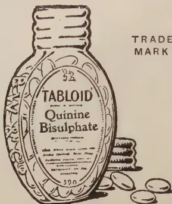

VOL. LXVII. PERADENIYA, SEPTEMBER, 1926 No. 3.
Included in this number of the Tropical Agriculturist is a section of an article dealing with agriculture in Japan. It relates to the technique of paddy growing and indicates the progress that has been made in Japan in the improvement of yields of paddy crops.
The increase of population in Japan has exceeded the increase in food supplies and although paddy cultivation has extended during the past 40 years by some twenty per cent., this increase has not kept pace with the increasing demand and in consequence attention has been directed towards better systems of cultivation.
By the liberal use of manures and by the use of improved seed, material increases in yields have been secured until Japan now grows crops which are greater than those of any other rice-growing country.
This increase in production has been gradual and it is emphasized that the improvement in the types cultivated by the development and use of pure-line strains has made it possible to use increased quantities of manures with success. The first essential to this success was the improvement of the types grown. It was taken in hand on a large scale and with considerable energy. A central experiment station with a number of sub-stations have been established and in these stations the work of selection and breeding has been concentrated. Attention has been concentrated upon producing new types and of
130[SEPTEMBER, 1926.testing them on a field scale. The distribution of seed paddy was then organized and it is estimated that 70 per cent. of the seed paddy used reaches the farmer through the seed-distribution channels which have been provided.
With the increasing use of pure-line paddies the demand for manures progressed and the use of manures in Japan has become as popular amongst Japanese farmers as in Europe. All sorts of refuse are turned into compost and utilized. Increased use of green manures is taking place and artificial fertilizers are becoming gradually employed.
From these experiences in Japan, Ceylon can learn many lessons. It is doubtful if the increase in new lands for paddy cultivation in Ceylon can keep pace with the increasing demands for rice. It is equally doubtful if the population will be available for the cultivation of such lands in the jungle wilds. In Ceylon, therefore, increased food production should be looked for from the production of increased crops from existing fields and for the development of such new areas as may exist within easy access to surplus population.
Work has been begun in recent years on the production of pure-line strains of paddy and this work has now reached a stage when a number of promising varieties are available and where careful tests are being made in a number of experiment stations scattered throughout the Island. This work will extend rapidly during the next few years and the organization of seed supplies will then be taken up.
Similarly experiments and demonstrations with manures have been conducted during the past five years and steps are now being taken to secure if possible better systems of supply to paddy growers.
If our experience is similar to that of Japan, increased paddy crops should be gradually and continually secured.
SEPTEMBER, 1926.]131The following extract is taken from the Annual Report of the Chemical Division of the Department of Agriculture, S.S. & F.M.S. for 1925, published in the Malayan Agricultural Journal, Vol. XIV., No. 6:—
The principal investigations in connection with rubber were as follows:—
Rubber Content of Latex.—The object of this investigation was to determine a standard method of procedure for the estimation of the rubber content of latex in connection with the marketing of this product. The investigation was also concerned with the changes taking place in ammoniated latex during storage, and the effect of the period of preservation on the weight of the coagulum obtained by the addition of varying concentrations of acetic acid.
The rubber samples obtained by coagulating preserved latex were dried by various means, in order to establish data on the analytical methods adopted by firms and estates buying and selling latex on the basis of its "dry rubber" content.
The results of the investigations so far carried out have led to the following conclusions:—
The weight of coagulum obtained from ammoniated latex by coagulation with acetic acid varies for any particular sample of latex according to the duration of preservation and the concentration of the acid. The variation is not due to a mechanical separation of the constituents of the latex.
From a consideration of the total solids of latex preserved for twenty-four hours it appears probable that the degradation of the solid constituents and the subsequent loss of volatile products occur. The effect of storage of ammoniated latex for short periods up to twenty-four hours appears to result in a slight increase in the total solids obtained by evaporation. This is possibly due to the fixing by the alkali of volatile constituents of the fresh latex, * e.g., carbon dioxide volatile acids or aldehyde.
Effect of alternate Tapping Periods on Rubber.—Tests were carried out on a number of samples obtained from an extended experiment made by Mr. J. Grantham, Director of Research H.A.P.M., Sumatra, on the effect of periodic tapping systems on yields. The results shewed that variations, in respect of rate of vulcanisation of the rubber, were caused by the different systems of tapping. The conclusions reached were as follows:—
The alternation of tapping and resting affects the rate of vulcanisation of the rubber.
* The presence of volatile constituents of fresh latex are under examination in connection with another investigation.
132[SEPTEMBER, 1926.The rubber obtained from trees tapped after a long period of rest has, during the early stages of renewal of tapping, a very slow rate of vulcanisation, which settles down to a constant and more rapid rate after about three to four weeks.
The irregularity of the tensile figures does not permit any definite conclusions to be drawn as to the actual tensile quality of the rubber, which appears not to be affected to any marked extent.
Effect of Alkaloids on Rubber.—In view of previous investigations carried out by us, shewing the marked effect in acceleration in rate of vulcanisation brought about by the addition of quinoidine (the uncrystallizable alkaloids extracted from cinchona bark) and other crystallizable alkaloids of cinchona bark, further work has been carried out on the effect of nicotine, hyoscine, cocaine and emetine, and also ipecacuanha root (containing emetine and allied alkaloids). These investigations have shewn that emetine in small quantities and also finely ground ipecacuanha root have an effect similar to that of the cinchona alkaloids, in that small quantities of this alkaloid when mixed with the rubber have a marked effect in accelerating the rate of vulcanisation.
Effect of Copper on Raw Rubber.—Experiments carried out as a result of the examination of a sample of tacky rubber have shewn that metallic copper does not cause tackiness in the absence of soluble copper compounds.
Variations in Tensile Strength.—Experiments on the variation in tensile strength of rubber and the fortuity of the breaking point of samples under test have been carried out and extended to include the effect of the addition of foreign matter in the form of fine particles. The results of these investigations, which have been published recently, shew that the presence of small proportions of soil particles, ground rubber bark and other foreign matter does not affect the fortuity of the breaking point and only in some cases decreases the tensile strength.
Effect of Light on Rubber.—Investigations on the effect of light of varying wave length on raw rubber have been commenced, in connection with the effect of light in producing "softening" and tackiness.
Formic Acid Coagulation.—Owing to the recent interest taken in the substitution of formic acid for acetic acid as a coagulant, due to the present low price of the former, a report has been published in this Journal drawing attention to the results of investigations carried out by the writer (B. J. Eaton) and his colleagues some years previously. Those investigations showed that formic acid was as good as acetic acid as a coagulant in regard to the quality of the rubber and that its substitution could be recommended, if it were more economical. It has been shewn previously by us, as well as by other writers, that approximately only half the amount of formic acid, compared with acetic acid, is required for coagulation. In addition, attention has been drawn to the fact that the relative market price of an 80 per cent. acetic acid is less than two-thirds that of glacial acetic and that economy would probably be effected by importing and using 80 per cent. acetic acid in lieu of the glacial acetic acid imported at present.
SEPTEMBER, 1926.]133Miscellaneous Investigations.—A series of investigations on footwear sole material composed of rubber was carried out on behalf of the F.M.S. Rubber Propaganda Committee. One material examined promises to be an excellent substitute for leather and was found to have excellent wearing and abrasive qualities.
The writer has also drawn attention to the use of Fibrok and Bateman's fibrous crepe in footwear sole material in England.
Experiments on the preservation of fruit by dipping in latex, in order to produce a waterproof film, have not met with marked success.
An interesting method of combined coagulation and cold vulcanisation by means of calcium polysulphide (produced by treating flowers of sulphur with slaked lime), has been discovered locally. Some preliminary tests have been carried out on the vulcanised rubber products and the results indicate that the process is promising, especially for water-proofing cloth direct with latex.
Routine Analyses.—A number of estate samples of rubber were subjected to vulcanisation tests and reports sent to the estates concerned.
Seventy samples of latex, in connection with the sale of this product, were examined for "dry rubber" content.
A. SHARPLES, A.R.C.S., D.I.C.,
Mycologist, Department of Agriculture, S.S. & F.M.S.
Recently, * attention has been drawn to an affection of Hevea brasiliensis both in Ceylon and Malaya the fundamental cause of which affection has been ascribed to a combination of weather conditions during the wintering period of 1925, the cumulative effect being a secondary fall of the newly developing leaves some time after wintering.
This year, 1926, an entirely different set of weather conditions has been encountered in Malaya. The usual dry period, which is helpful for a good wintering, was of long duration and the plantations were practically leafless for a comparatively long time. The usual wintering is somewhat uneven in Malaya; as a rule, some trees retain their foliage until trees wintering earlier are already producing new leaves. Thus, in most years, there is a fair amount of shade in parts of the plantation.
The weather conditions during the wintering period of 1926, were such as to produce the most even wintering in the writer's experience. The trees were leafless all at the same time, and the temperature was particularly high during the wintering period of this year.
During the last few weeks attention was drawn to an affection of exposed lateral roots, the symptoms of which suggested the well-known symptoms of lightning-strike or scorching. The disease was first noted on a hilly
* Sharples A.—Hevea Mildew in Ceylon and Malaya, Malayan Agricultural Journal Vol. XIV. April 1926, No. 4.
134[SEPTEMBER, 1926.estate, where the lateral roots on the hillsides were likely to be more exposed than on flatter land. On these exposed roots, slight cracks appeared in the bark, which on further examination showed a much greater extension of apparently scorched and dead, dry bark than the cracks in the bark would indicate. Wounds, often two feet in length, had to be made to clear out the diseased tissue. The wood beneath the dead bark showed the usual, greyish discoloration typical of Hevea brasiliensis when attacked by the Diplodia sp. which causes the "Die-back" of branches of Hevea. The wound was not penetrated to any great depth, the deepest being about one inch, but the wood penetration went beyond the limits of the dead bark. The fungus was progressing slowly along the wood, and not in the bark. A yellowish discoloration was often seen on the inner boundary of the greyish, discolored wood.
At first, the affection seemed to warrant serious attention for a 10 per cent. infection was counted. Besides this high percentage infection, the rapid and often serious effects of lightning-strike had to be taken into consideration; when the cortex of the trunk is scorched over the whole length of the tree, as by lightning, the progress of the Diplodia fungus is very rapid and death may ensue very quickly. As mentioned above, the fact that extension was taking place in the wood, and not in the cortex, was a matter for satisfaction.
Little could be done except to advise measures for cleaning out the diseased tissues and preventing further spread. Specimens were obtained in the laboratory and isolations and inoculations were undertaken. The isolations all yielded the expected Diplodia sp. The inoculations, both in wounded and unwounded roots, with large portions of diseased tissue were negative 14 days after inoculation. This led to the conclusion that, only under exceptional conditions, was the disease likely to spread rapidly.
In the search for contributory causes the question of the apparent scorching was not easily answered. No fires had been reported and although lightning plays many pranks, the position of the wounds and distribution precluded this explanation. There have been no previous records of "Sun-scorch" but this seemed to afford the likeliest explanation and there seems little doubt when the distribution of the disease is studied from this stand-point that "Sun-scorch" is the main contributory cause of this particular affection.
If the hilly divisions with an East and West frontage are considered, it is found that starting out from the East face no cases of scorched exposed lateral roots could be found. As a move is made round the hill to the west a few isolated, lightly affected cases will be found, until the west face is reached, when several trees in the same row often will be found affected. If a move is made from East to West over the top of the hill, the same phenomena are met with; no cases on the East, a few isolated cases on the top, then a heavy infection on the west side. Moreover, on single trees with several roots exposed all round the tree, those facing west are heavily affected, while those on the Eastern side which would be shaded by the trunk during the hot afternoon sun, were not affected or only very lightly affected.
SEPTEMBER, 1926.]135The evidence collected in this manner appears conclusive, the explanation being that trees with exposed lateral roots situated on a slope facing West, received the direct rays of a very hot afternoon sun, during a period when the trees were leafless and shade was absent, owing to the extraordinary, even wintering of 1926. The scorched areas are next attacked by the Diplodia sp. common on rubber, which rots the bark and penetrates slowly in the wood.
In advising control measures, care had to be taken to see that the fungus had not penetrated into the trunk of the tree. Some of the wounds on the lateral roots initiated by sun-scorch, were almost in contact with the stem; numbers of these were cut as near the trunk as possible but in no case was there any definite penetration into the trunk of the tree.
The best form of treatment would be the excision of all the attacked wood and cortex. On a large percentage of roots this would hardly be feasible, as the scorching often produced several wounds on an individual root; these have later joined together to produce a diseased area many feet in length. Such a length of diseased wood would be difficult to excise and in such cases it would be a better plan to cut through the root in healthy tissue, take the diseased root out of the ground and burn. Where wounds are small, the diseased tissue can be chiselled out with broad, flat chisels, the exposed surfaces painted with a strong solution of Solignum or Jodelite, to be followed later by a generous application of Tar.
On some estates shortage of labour may interfere with the progress of the work of excision and some simpler method may be advisable. Even in the early stages the healthy cortex is forming a broad callus edge round the diseased wound and natural recovery may be possible in many cases. On one estate, no excision of diseased wood is being done; the scorched and dead bark is cleaned away thoroughly and in this connection, care must be taken to cut down the callus tissue, which overhangs to form a cavity, level with the wood surface. If this is not done, the preventive paint will not reach the tissue protected by the overhanging callus, and water may collect in the cavity. Such a condition would be most favourable for the entry of some of the more serious wood-rotting organisms which are partial to Hevea, and considerable damage might be done. Having scraped away the loose decayed cortex, and cut down the callus edges, the exposed surfaces are painted directly with a mixture of 50 per cent. Tar and 50 per cent. Solignum.
It is too early to report fully upon the respective merits of these methods. A later report will be issued.
Note:—Since going to press the typical symptoms have been reproduced in inoculation experiments when the bark of exposed lateral roots is, previous to inoculation, scorched by fire. In some cases the scorching alone is sufficient to initiate the disease, as was shown by the control experiments, in which no inoculating material was used. A further report will be issued on completion of the inoculation experiments.—The Malayan Agricultural Journal, Vol. XIV., No. 5.
136[SEPTEMBER, 1926.The following extract from the article on "The Effect of Fern and other Growth on the Health and Growth of the Rubber Tree" by F. G. Spring, Agriculturist (Rubber) of the Department of Agriculture, S.S. & F.M.S., is taken from the Malayan Agricultural Journal, Vol. XIV., No. 5:—
The writer recently visited seven estates for the purpose of inspecting rubber trees growing on areas under ferns and to arrange, if possible, for experimental work to be undertaken which might throw some light on the health and growth of the rubber tree in fern areas.
In the writer's opinion, only on one of these estates is there any evidence to support the argument that ferns are harmful to the rubber tree. The trees on this property are very backward in growth and have not the healthy appearance of those growing in adjacent clean-weeded areas. The leaves have a pale unhealthy colour, the tips of several of the branches are dead and the rubber can only be described as very poor. There is a small amount of lalang but whether it is present in sufficient quantity to be an influencing factor is questionable. The ferns are about four feet in height and have afforded dense cover for the past eight or nine years. This is far too long a period without cutting the ferns back. On the estates where they are cut back periodically no harmful results were found; how often cutting back is necessary is a matter for investigation.
Ferns provide an effective cover for the prevention of soil wash and are particularly valuable on areas where other vegetation is difficult to establish. They also retard the growth of lalang and keep the soil in a soft, moist condition.
The trees on all the estates visited with the exception of those on the property mentioned, look healthy and are well grown. The foliage is generally excellent and the bark thick and succulent. In the absence of experimental data, however, it is only possible to express an opinion that ferns are not harmful, in old rubber areas, provided the cover is free from lalang or other noxious weeds and is cut back occasionally. It is hoped that the tests about to be undertaken will throw light on the subject and provide some definite information as to the value or otherwise of ferns as a cover plant. The type of fern or moss best suited for the purpose requires investigation. Tall growing ferns must be cut back periodically; if left for a long period the remaining stubble is so strong that it is difficult for labourers to work, in any such area, without injury to the feet. Cutting is best done at the commencement of a wet season in order that the material may be left on the land without danger of fire. Tall growing ferns, if never cut back, are objectionable on account of the difficulties of supervision and the labourers' work.
SEPTEMBER, 1926.]137In the Tropical Agriculturist for October, 1917, a brief account was given of the improved returns secured as the result of manuring coconuts. The following additional report dealing with the same subject has been received and is reproduced on account of its general interest:—
"The object in sending these notes and the following figures for publication in the Tropical Agriculturist is to make known to the coconut land-owners that it is paying or even profitable to manure the coconut.
There are a large number of estate-owners who do not believe in the manuring of the coconut. Some apply manure once or twice and give it up when they do not get big crops as a result.
The manuring of the coconut does not pay in the first two applications at least, and it is only after the third application that it begins to pay and yield profits.
It is not unnatural to have such a condition as a few pounds of manure applied once in two years will not be enough to develop the tree itself.
It would be seen from the following figures that once the land is developed to a certain stage, reduction of the number of pounds applied to a tree does not tend to reduce nuts. This view, however, should not be taken seriously without further facts and figures, owing to the fact that during the last ten years rainfall has been on the increase. It appears from the records that sufficient and well distributed rainfall alone is one of the factors for the increase of crops on coconut plantations.
Old Plantation— 218 acres.
| Eight years 1908—1915 |
Five years 1916—1920 |
Five years 1921—1925 |
|
|---|---|---|---|
| 1. Five-yearly average total crop per year ... | 604,738 | 843,987 | 892,151 |
| 2. Five-yearly average increase per crop per year over first 8 years average ... | — | 239,249 | 287,413 |
| 3. Five-yearly average increase of crop per year due to increased plucking of trees over first eight years average .. | — | 100,333 | 118,394 |
| 4. Five-yearly average increase of crop per year due to manuring over first eight years average ... | — | 138,916 | 169,019 |
| 5. Five-yearly average cost of manuring and cultivation per year ... Rs. | 4,426.20 | 3,555.98 | 5,253.33 |
| 6. Five-yearly average acreage manured per year ... Acres ... | 102 | 90 | 102 |
| 7. Five-yearly average number of pounds manure applied per tree per year .. | 15 | 11 | 11 |
| 8. Five-yearly average rainfall per year .. | 68.57 | 71.23 | 72.71 |
| 9. Five-yearly average number of nuts per tree per year ... .. | 62.28 | 74.18 | 76.19 |
| 10. Five-yearly average crop per acre per year.. | 2,838 | 3,871 | 4,092 |
| 11. Five-yearly average number of trees plucked per year ... .. | 9,783 | 11,394 | 11,684 |
| 12. Five-yearly average increase of plucking trees per year over 8 years average ... | — | 1,611 | 1901 |
1. All the calculations are based on the actual number of trees plucked and not on the census.
2. The cost of manuring includes turning up soil and ploughing, etc.
3. In 1908 when artificial manuring was started the number of unbearing trees, though of bearing age and in blossom, was very large, and as manuring went on they came into bearing yearly. So, I have taken the average crop of the first eight years to be the basis for comparison with the ensuing years.
4. Under item No. 3 the calculation of the number of nuts was made by taking 62.28 nuts per tree. On an unmanured and uncultivated land of this extent with ordinary coconut soil 62 nuts per tree is not obtainable. Properly speaking this should be calculated at 55 nuts per tree, when it will be seen that increase due to manuring is 150,644 and 182,858 nuts respectively.
The mixtures employed after the termination of the War have been as follows:—
| Mixture | Parts | Nitrogen | Phos. Acid | Potash |
|---|---|---|---|---|
| Groundnut cake | 2 | 14 | — | — |
| Fish Guano | 3 | 21 | 21 | — |
| Steamed bone Meal | 2 | 6 | 44 | — |
| Epos. phosphate | 1 | — | 29 | — |
| Kainit | 1 | — | — | 14 |
| Muriate of Potash | 1 | — | — | 50 |
| 10 | 41 | 94 | 64 | |
| Nitrate of Soda | 7 | — | — | |
| Muriate of Potash | — | — | 25 | |
| Kainit | 2 | — | — | 28 |
| Steamed bone meal | 6 | 18 | 132 | — |
| Fish Guano | 2 | 14 | 14 | — |
| 11 | 39 | 146 | 53 | |
| Nitrate of Soda | 1 | 15 | — | — |
| Muriate of potash | 1 | — | — | 50 |
| Kainit | 1 | — | — | 14 |
| Steamed bone meal | 5 | 15 | 110 | — |
| Fish Guano | 2 | 14 | 14 | — |
| Epos. phosphate | 2 | — | 58 | — |
| 12 | 44 | 182 | 64 |
SEPTEMBER, 1926.]
The following article on "The Technique of Rice Growing in Japan" by Dr. P. J. S. Cramer, Director of the General Experiment Station for Agriculture, Buitenzorg, Java, is taken from Communications (No. 22) of the General Experiment Station for Agriculture. These notes have been gathered by the Editor during a voyage in 1924.
The dense population and the relatively small area of agricultural land forced Japan to concentrate all her forces on raising the yield per acre. With farms averaging three acres in extent the agriculture is perforce extremely intensive. In order to provide even the barest necessities for a family, such an amount of labour and attention must be given as will bring the crop as nearly as possible to the maximum (Buchanan, p.550). In many respects the rice growing in Japan makes the impression of being carried on with more intensive methods, than in countries like Java and Cochin China. During my visit in the end of June the farmers were just busy with planting their fields; it was a striking feature, that the young seedlings were always planted out in absolutely straight lines, along ropes made out of rice straw, or with the aid of a bamboo frame, which was transplaced regularly. According to the informations I could collect from colleagues in Japanese experiment stations more labour is spent on the upkeep, than in Java; f.i. more weedings are applied. Often the fields are weeded five times during the growing season. Already since old times manures are applied to the fields.
The irrigation is given, like with us in Java, mainly from rivers. According to a statistic in a pamphlet on agriculture in Japan published in 1914 by the Department of Agriculture in Tokyo, the figures for the source of the irrigation water are:
| from rivers | 65.4 % | of the area of paddy fields |
| " reservoirs | 20.9 % | |
| " ponds and lakes | 0.9 % | |
| " wells | 1.3 % | |
| " sources | 5.4 % | |
| " other means | 6.1 % |
In Southern Japan I saw often dams in the rivers. They are generally constructed from stone blocks, cut into rough square form, and not of round boulders, kept together by wire netting, as with us in Java.
Fesca calculated the quantities of water needed per cho; he came to an average of 2.4 metric tons per day per cho, what comes near to the figure considered an average in Java, viz. 1 Liter per second per bahoe (0.7 H.A.). A difference with Java is, that the water of the rivers—at least of the ones I saw in June, in Southern Japan—is generally clear.
To bring the irrigation water on the field often paddle wheels are used, taking the water from the tertiary ditches. The paddles fit into a gutter through which they press the water up to the opening above, from where it
140[SEPTEMBER, 1926.flows on the field. The moving power is generally a man; in the early morning, already at half past four, one sees everywhere men, their clothing reduced to a small girdle, busy with these irrigation wheels; they tread upon the paddles on the side, turned from the field, walk so to say upward on the wheel and give it a motion, which brings the water on the field. In the neighbourhood of Osaka I saw many small windmills in the fields, the wings made out of zinc plate, somewhat curved to catch the wind: they actioned small pumps, which pumped the water on the fields. Even sometimes one sees people irrigating vegetable gardens with water, hauled in buckets out of wells.
The working of the soil is not the point the best cared for in the culture. Ploughing is now far more general than in Fesca's times, when it was a rare exception. The number of draft animals seems to increase. In some regions horses are used on a large scale. So I saw many used in the neighbourhood of Shimonoseki; in other regions the ploughs and harrows are drawn by oxen. During my visit in the end of June the harrowing was in full swing. By counting the number of people working in the fields, busy with seedling beds and planting out, and the number of draft animals, drawing harrows, I came to a proportion of 1 animal to 4—5 people. This leads to a comparatively strong density of horses and cattle. In the opinion of some of the Japanese experts the number of cattle is increasing more than that of horses, because the first mentioned have also still some value for slaughtering. As prices for both I heard figures of a couple of hundred yen for an ox, for horses 300—500 yen. The last are mostly raised in Northern Japan; they are much higher than the ponies we use in Java for carts. For us, who are not accustomed to see horses used before the plough in paddy fields, it is strange sight to see them plodding through the mud of the irrigated soil.
For ploughing, which is done only once before the rice is planted, the old styled Japanese wooden plough is used, a rather clumsy and unhandy tool. A good picture of it will be found in Fesca's book. In my opinion our ameliorated iron ploughs might be introduced with advantage in Japanese agriculture. The common Japanese plough enters the soil about 15 cM.; the soil is turned into beds 4—6 feet broad. This is done immediately after the harvesting of the barley. Soon afterwards the land is harrowed; the harrow consists in a wooden bar with wooden teeth, directed backward, which is drawn over the field square to the direction of the beds, so that the ditches are filled at the same time with levelling the soil. The ploughing and harvesting are commenced early in the morning; the implements are always drawn by one single animal. The ploughing is done the whole day through, it is only stopped during the resting hours for the people. The number of working hours per day averages 8; in this time one animal can plough tan (0.15 H. A.).
The planting material is raised on seedling beds, like with us in Java. The seeds however are always sown as such and never laid out in the ear. Laying dry the seedling beds is never practised. The young seedlings are transplanted, when they are 35—45 days old and when there is sufficient irrigation water for the fields. It seemed to me, that the plants at this age are somewhat shorter, plumper than with us. The tops are never cut off, as is often done with seedlings with us.
SEPTEMBER, 1926 ]141The usual planting distance is 0.85 feet, equal to 25 cM. As already stated, the plants are put out in perfectly straight lines. Generally 3 plants are put per hill.
The weeding is done by hand and often also with the aid of a tool, consisting in a wooden roll with wooden pens, stretching out from the cylindrical surface. This tool is moved up and down between the rows of plants; the perfectly straight lines make this easy. It has been used also in the experiment fields in Buitenzorg with a certain amount of success. Other tools for weeding are not known in Japan.
The harvesting is done with a sickle. For the preparation of the grain a whole set of small implements are used, well fit for working on a small scale. They can be actioned by hand or foot, or by electricity. A wooden cylinder, with rings of a heavy wire standing out of the surface, beats the grain from the stalks. A mill, with lists of hard wood inbedded in clay or a recent improvement—with rubber between them, is used for husking the grain. A sort of wooden mortar, wherein a small pillar is moved up and down by a crank, is used for removing the silverskin and polishing the grain. This last tool may be seen often in rice stores in towns, moved by electricity.
The husked grain is packed in small bags, made out of rice straw. Burning the straw in the field is never practised; the rice straw represents a certain value; it is used for all kinds of purposes, for making the ropes used in transplanting the seedlings to the field; for making mats, such as are used in summer for shading horses, like an umbrella, or for baling rice; also a sort of small baskets are made from these mats used for carrying sand for repairing roads. On a large scale rice straw is used for roofing material; often house roofs are made out of a thick layer of straw; and also for making the thick, elastic mats which are used on such a large scale for flooring the rooms of Japanese houses. In agriculture straw is used for protecting young plants by low hedges as a wind screen; it is spread on the soil in growing water melons and it helps to close the barrels, in which night-soil is transported to the fields. Straw is used as a litter, in making stable-manure, and is mixed into compost. The value depends largely on the place; in the neighbourhood of large towns it has a far higher value than in more remote rural districts. The value will be often 1 sen per kwan (3.75 Kg.) or even more; per tan 100—150 kwan or still higher production are made, so that the profit on the straw may be per cho 10 yen and more.
Repeatedly we have already explained, that the rapidly increasing population of Japan created a demand for rice growing so fast, that the extension of the paddy fields could not keep in pace with it.
Since the equilibrium between local food consumption and local food production was broken, the solution of the problem of increasing the local food production has been sought in various directions. As we have seen before, since 1884 the rice fields were extended with 10.5 per cent., the dry fields with 32.4 per cent. Another measure, pointing into the same direction, was the fostering of the planting of second crops after the rice crop; also by such a system, cropping the same field twice a year, some increase may be expected. In 1884 Fesca calculated, that about 25 per cent. of the rice fields were planted, after the rice, with a dry crop; for the years 1919 and 1920
142[SEPTEMBER, 1926.the average figures were in thousand of cho (calculated from the statistics in the Japan Year-book, 1923):—
| Paddy fields with one crop | ... | 1850 cho, or 60.7 % |
| " " with second crop | ... | 1196 ,, or 39.3 % |
A third measure was the most successful. By ameliorating the system of farming, by the use of improved seed and a more liberal use of fertilizers,—what may be called by intensifying the rice growing—a material increase in the yield per acre was obtained. At present there is no country, where such high yields of rice are made, as in Japan.
In Fesca's time the average production per tan was estimated by him at 1.2 koku; that was in 1885. The following list shows how the average yield per tan has increased gradually and regularly:—
| 1885 | 1.20 koku |
| 1904—1908 | 1.57 ,, |
| 1909—1913 | 1.63 ,, |
| 1914—1918 | 1.81 ,, |
| 1919—1921 | 2.01 ,, |
These figures (from the Japan Year-book, 1923) are according to the experts rather somewhat too low. The averages include also the figures for the rice in Northern Japan, where conditions for the production are less favourable, so that they lower the average. The figures are interesting, as well in comparison with those of other countries, as with figures for earlier years in Japan. No other country in the world shows such high yields per acre. In America we find average figures for the last 5 years largely varying, from 24.2 bushels per acre (Florida) to 57.9 bushels (California); in clean rice this means 755 kg. and 1824 kg. per H.A. In tropical countries, like Java, Indo China, the Philippines, an average production of 1,000—1,200 kg. per hectare may be considered a fair figure. In Japan it is about 3,000 kg., or practically three times this figure. It shows at once, what a high level rice growing in Japan has reached.
It appears from the figures, that this increase in production has been reached gradually. The constant upward march of the figure shows, how the improvement of the rice growing has worked further and further through. Two causes are especially responsible for this increase: the applying of larger quantities of manure and a better application of different artificial fertilizers; and, on the other hand, the improvement of the planting material.
As we will see further on, both ameliorations worked together to increase the production. On one side, the improvement of the planting material made it possible to apply large quantities of manure. In Java we find that on places, where the rice plants have soil of extreme fertility to their disposition, like at the entrance of the fresh irrigation water in the paddy field, they grow too heavy and have a tendency to layer. In Japan all varieties I saw used have short stiff stems, so that they will not layer so easily, even under heavy manuring. On the other side it seems probable, that only by using very productive varieties the heavy manuring gives its full effect, while less productive varieties would not react so strongly on this method.
SEPTEMBER, 1926.]143We will consider both factors in detail in a following paragraph; before doing so it may be stated, that a very material rise in the market price of rice certainly has had a stimulating effect on improving the crop. We have already cited figures; for forty years rice was 6 yen per koku, now it is 33 yen, or more than five times as high. On the other hand, wages have increased considerably too; they are far higher than in countries where rice is cheaper, like Java or Indo China. The daily wages of labourers in the experiment fields I visited were practically three times as high as the ones we pay in our experiment fields in Java, amounting to 1.10—1.20 yen per day; the working day is however somewhat longer than in Java (8 hours in summer). Fesca mentions in his calculations on the cost price for his time daily salaries of 10—15 sen, for other regions 20—30 sen. It is difficult to estimate what in those days average daily wages would have amounted to; but the striking fact remains, that in these days rice cultivation was often not profitable, while it may be considered now to be generally giving a good return.
The use of farmyard manure and other natural manures dates already from old times in Japan. Originally especially refuse was used as such, and also green manures. Fesca described in 1885 a whole list of fertilizers, which were used in those days by the Japanese farmer. It is remarkable what energy they showed in their struggle to obtain them. On page 61 (Vol. II.) of Fesca's book it is mentioned, amidst a list of analyses of fertilizers, that Japanese junks went regularly to Wladiwostock to fetch refuse from there, which was used on the paddy fields of the home country for increasing the productive power. It is not astonishing, that the artificial fertilizers, when their use was developed in Europe, became rapidly popular among the Japanese farmers; they are used there now on a scale, which sometimes comes near to or even surpasses the use of them in European and American agriculture. Besides artificial fertilizers ("cash manure" as they are called in Japan), always still a large use is made of refuse materials for manuring the fields, in the first place of human excrements. Early in the morning one can see the transport of these in small barrels, on the typical low four-wheeled carts, from the town to the fields; even what can be collected in public closets is carefully kept and used. On the farms the night soil and stable manure are kept for the use in the fields and also the ashes of wood and charcoal; all sorts of refuse are turned into a compost. Green manures are applied in different ways; sometimes it is done as with us in Java; a leguminous plant is grown in rotation with other crops and ploughed under before the rice is put out. Another way of applying green manure is more characteristical for Japan; on the land not fit for cultivation grasses, shrubs and leaves are cut and collected, and this mass is spread out on the soil as a kind of mulch. In the tea plantations near Kyoto for instance I saw, early in July, the land covered everywhere with what seemed at first sight straw, but what was here and there still green; apparently it was wild grass cut on the slopes of the neighbouring hills, used for mulching the fields. From a set of data on special crops and individual farms it may be deducted, that the use of natural manures to that of artificial fertilizers shows a proportion of to or to . Artificial fertilizers were used in Japan in 1919 to
144[SEPTEMBER, 1926.a total value of 315 millions of yen. Prof. Kato gave, as a rough estimate for the total use of manure in 1923, 600 millions of yen, which seems to correspond well with the first figure. This total quantity is used on an area of roughly 5.5 million cho, so that per H.A. as an average more than 100 yen per year are spent on manure. Out of the calculations for the cost of production of rice and tea it appears again elsewhere, how large sums of money are spent on this item; of the cost of production of green tea leaves 40.5 per cent. of the expenses are for manures; for rice this percentage is 29.1 per cent. We have cited already, that for rice 137.69 yen per cho were spent on manuring, out of which figure 88.46 yen were for artificial fertilizers, 49.23 yen for natural manure. How rapidly the amount of manure applied has increased may be shown by the estimate, that 15 years ago the quantities of artificial fertilizers used were only 2/5th of what is applied now.
According to informations obtained from Dr. Yonemaru, who in the Central Experiment Station heads the division for manuring, in the rice growing especially nitrogen-manures are needed. A common practice is to give 50 kg. of N. per cho, or 250 kg. of sulphate of ammonia. Up till now as a nitrogen-containing manure mainly soy bean cake was used, imported from oil mills in Manchuria; Japan proper covers only 10 per cent. of the demand for this commodity. This press cake contains 6–7 per cent. N. Formerly the proportion of prices was, that the N. in bean cake cost 3 yen per kwan, in sulphate of ammonia 3.5 yen; now the proportion is 5 yen in bean cake against 3 yen in sulphate of ammonia. So at present the use of soy bean cake comes out to be more expensive, than sulphate of ammonia. The representatives of the German works making nitrogen compounds from the nitrogen in the air had recently visited the experiment station and seemed to have the intention to throw out the bean cake by furnishing sulphate of ammonia at a low price. Even now it is already cheaper but the farmer is still better accustomed to bean cake.
Phosphates are considered less needed. The barley crop gets a good manuring of phosphates (35–40 kg.) which will be still beneficial to the rice afterwards. The phosphate fertilizer is generally given in the form of superphosphate. There are several works in Japan (Tokyo, Osaka, Shimonoseki and Kobe) where this fertilizer is manufactured from raw phosphates, imported from Angauer, Ocean Island or sometimes even from Egypt.
The potash manure was given formerly only in the form of wood ashes; now the yields are higher, it is also put into the soil in artificial fertilizers. As often used quantity is 40 kg. of per hectare.
Lime is only used in exceptional cases, in some parts of Western Japan and in the regions along the Inland Sea. The rice fields are not acid; the dry fields on the slopes of the mountains and at their base are often acid. As stated already above, often leguminous plants are used as green manures and interposed in the rotation of crops. They are usually manured with farmyard manure and wood ashes; if artificial fertilizers are applied generally phosphates are given. Nitrogen fertilizers like sulphate of ammonia are never applied on leguminous crops.
SEPTEMBER, 1926.]145Serious efforts are made to make the use of "cash manures" easier for the small farmers by establishing co-operative buying associations. In 1919 out of a total amount spent on artificial fertilizers of 315 millions of yen, a quantity of a value of 47,370,000 yen or 15 per cent., were handled by co-operative societies.
The improvement of the planting material has been taken in hand on a large scale and with considerable energy and financial sacrifice. Since 8 years an amount of 120,000 yen is annually destined to this purpose by the central government; the prefectural (local) agricultural experiment stations collaborate energetically for the same purpose. The work is distributed over the different bodies in the following way. The central organisation is run by the government. It consists in a division of the Central Experiment Station in Tokyo with several branch stations in various regions of Japan; I visited the station at Kashiwara, near Osaka. In these central stations the work comprises the selection and further breeding of pure lines out of well known varieties; crossing and further breeding of hybrids; the attention is especially concentrated upon the making of new types and the first testing of them from a practical point of view. Before a new race is sent out, it is tested by this central organisation during 3 years, to determine its value for practical agriculture. Formerly it used to be even 5 years, but it has been found not necessary to carry on the testing for such a long period. After this preliminary testing the seeds are handed over to the prefectural stations; I visited one near Fukuoka. In the last mentioned stations the staff not only tests out the forms received from the central organisation, but also it isolates, crosses, and purifies its own forms. The prefectural stations send out the rice seeds to the multiplication fields in the country and of the townships, where the forms are further tested and from where they pass over into the hands of the common farmer. Till this last distribution all the seeds are distributed free of charge. It is estimated, that at present 70 per cent. of the seeds used reach the farmer by the way sketched above.
The government has considered some years ago to use its control of the channels, by which the seeds reach the farmers, for obtaining a certain standardisation of the rice types, limiting the number of varieties and imposing the most desirable ones upon the commercial producers, in the same way as this has been done for the silk production. Professor Kato, whose advice was asked in this matter, had strongly recommended not to introduce such a measure, as he did not think it would bring advantages and as, on the other hand, he feared that too rigid a control in the matter of seed distribution might counteract the rise and the spread of new valuable varieties or hybrids. The measure has not been introduced.
Without such a rigid control the system of distribution sketched above has had for effect a limitation of the number of varieties with the farmers; they are always grown in pure, unmixed fields; if the work is carried out as it should be done, even the plantings of the farmer should represent pure
146[SEPTEMBER, 1926]lines. The varieties, planted on a large scale, are the following (figures for 1919) :—
| Okute Shinriki | ... | ... | 34,000 | „ |
| Nakate Shinriki | ... | ... | 29,000 | „ |
| Wase Shinriki | ... | ... | 263,000 | „ |
| Aikoku | ... | ... | 159,000 | „ |
| Kamenoo | ... | ... | 100,000 | „ |
| Omachi | ... | ... | 50,000 | „ |
| Oba | ... | ... | 40,000 | „ |
| Bozu | ... | ... | 38,000 | „ |
| Sekitori | ... | ... | 31,000 | „ |
| Hohoku | ... | ... | 34,000 | „ |
| Ishijiro | ... | ... | 32,000 | „ |
| Kokuryo Miyako | ... | ... | 22,000 | „ |
| Miyako | ... | ... | 21,000 | „ |
| Kameji | ... | ... | 20,000 | „ |
| Takenari | ... | ... | 19,000 | „ |
| Shiratama | ... | ... | 16,000 | „ |
| Waseono | ... | ... | 12,000 | „ |
| Muboaikoku | ... | .. |
These varieties occupy in total 1,420,000 cho, or almost half the total annual area under rice. A few details about the principal ones may be added. The first point is, that the Shinriki rice occupies such a prominent place in Japanese rice culture. The three varieties mentioned are the late (okute) shinriki, the medium variety (nakate) and the early shinriki (wase shinriki); out of these the first is by far the most important. This variety alone occupies 500,000 cho, equivalent with 16 per cent. of the total area under rice. Under the early varieties Aikoku occupies a prominent place with 163,000 cho. When the very varying conditions of soil and climate in Japan are taken into account, not only caused by difference in altitude above sea level, but also in latitude, average summer temperature and the date of first frosts, the local differences are certainly not less varied than in tropical regions like Java, the Philippines and Indo China; the limitation of the varieties grown means under these circumstances a high level of the agricultural technique. At present efforts are made to introduce and spread the Japanese varieties in the Japanese colonies Formosa and Korea; the fact that it has already been possible to adapt a variety like the Shinriki to the climate of these other areas certainly shows, that it is possible, if one has once an excellent variety in hand, to provide a very large area, with far distant boundaries, with seed paddy of improved quality.
Prof. Kato was kind enough to give some details about the origin of some of the varieties. The variety Shinriki was discovered in 1877 by a farmer in Nakajimamura (Hyogo prefecture), by name Maruo Jujiro. In a field of the bearded variety Teikichi he found a few ears without beards; he took three of them and sowed the seeds the following year. At once he understood to have found a valuable kind; by the shortness of the stems and the colour of the produce (in the husk). With another farmer, Imawura Zenroku, he started the multiplication on his new variety. In 1883 the shinriki was brought over to other localities, in the first years still within the same province; since 1887 it was transported also to other provinces. Since 1897 the variety was planted on a large scale and became
SEPTEMBER, 1926.]147more and more popular. Afterwards a medium and an early form have been isolated from it. It is not known with certainty, if the three original ears come from one single plant and so may be considered as the starting point of a pure line.
Of the early varieties the Aikoku is the most popular one. It was discovered in 1894 by Libuchi Sanshichiro, a member of the Senate. It is often planted as the pure variety; often also it is used as a parent in crossings. Prof. Kato made a hybrid of Aikoku with Shinriki in the experiment station at Kashiwara (1910); his object was especially to find a form, which would stand the leaf disease much spread in those regions (shiro hagare). Out of the generation a farmer in Mii, where the experiments on resistance against this disease were carried out, by the name of Tanaka Shingo, obtained a good line, which proved itself by further multiplication practically constant and which is now much grown in Fukuoka and Oita under the name Mii.
Kamenoo is an early variety, also found by a farmer in 1893; it is planted especially in Northern Japan, Northern Korea and Southern Manchuria. The Omachi, a variety with a medium date of ripening, was discovered in 1868 by a farmer; it is especially popular in Central Japan. Omachi is an early variety; it was discovered already 64 years ago in North Western Japan. The late ripening Kameji bears the name of the discoverer; it shows a very great resistance against a disease (Dactylaria); it is considered to be a spontaneous hybrid.
At present a few new varieties are promising; their popularity is rapidly increasing. One of the best known is the Kokko, an artificial hybrid, obtained in Kashiwara, between Shinriki and Sekitori; the last one was discovered 77 years ago by a farmer in the variety Sembonshu and is one of the rather popular medium varieties.
During the time of my visit to Southern Japan (end of June) the rice was just being planted out, so that not much could be seen of the distinctive characters. However, I have seen some herbarium material; what was striking at once was the reduced length of the stems; the tallest varieties were 3 feet; most were shorter. The straw is strong and stiff; the number of stems (with a planting distance of 25 c.M.) averaged 18, for Shinriki 25.
On the method of carrying out the selection work Prof. Kato gave me the following information. If the improvement of a certain variety is planned, then the seed is collected in different localities, where it is grown; these seeds are sown out and two series of plantings are made with it: a first one of separate plants (one plant per hill) at the usual distance; a second series is planted in the usual Japanese way. The plants of the first series are only used for further multiplication. A certain number of these are selected, taking account of characters like number of grains per ear, number of ears, size of the grain, length of the culm, earliness (of the breaking of the inflorescence), strength and stiffness of the straw. From all these selected
148[SEPTEMBER, 1926.plants individual sowings are made, comprising 100 plants. The uniformity is studied, especially of the "breaking;" it may not differ among the plants more than one day; only for Northern Japan a somewhat longer period is used. If, in case of failure of the main stem, one of the side stems takes its place, the difference is less than a day. Besides the date of the breaking other characters are noted, like the number of culms and their height; for the first mentioned character the coefficient of variation will be 21—25 per cent., for the second one 5 per cent. If the time allows it, also other characters are studied; otherwise the study is limited to these; further always the individual production is measured. The selected, uniform lines are multiplied and compared with the population; the better ones are chosen and multiplied on a large scale; as already stated, the preliminary testing is carried out during 3 years.
(CONDUCTED BY GATE MUDALIYAR A. E. RAJAPAKSE).
Quantity Sown : Two bushels per acre.
Annual Rainfall : 102.02 inches.
| Variety. | Province of Origin. | Date sown | Date of Flowering | Date of Harvest | Age | Paddy | Straw weight | Comparative Order. |
|---|---|---|---|---|---|---|---|---|
| (Days) Bus.srs. lb. | ||||||||
| F 14. Suduma-wi | Western | July 30 | Dec. 20 | Feb. 4 | 185 | 34 2 | 2,400 | 6 |
| G 17. Kuruma-wi | Southern | do. | do. | Feb. 8 | 189 | 28 0 | 2,112 | 7 |
| a 8. Podi-wi | Western | do. | Dec. 26 | do. | 189 | 63 0 | 3,180 | 1 |
| H 24. Ma-wi | do. | do. | Dec. 31 | Feb. 12 | 193 | 27 0 | 1,960 | 9 |
| G 18. Molagusamba | Sabaragamuwa | do. | Dec. 27 | Feb. 17 | 198 | 37 24 | 2,595 | 4 |
| K 16. Surasamba | Western | do. | Dec. 22 | Feb. 2 | 183 | 27 0 | 2,173 | 8 |
| U 8. Suduma-wi | Southern | do. | Dec. 16 | Feb. 10 | 191 | 41 8 | 2,120 | 3 |
| K 26. Godama-wi | Western | Aug. 5 | Dec. 18 | Feb. 5 | 180 | 27 0 | 1,792 | 10 |
| K 32. Godama-wi | do. | do. | do. | Feb. 7 | 182 | 17 30 | 1,540 | 11 |
| G 1. Mahama-wi | do. | July 30 | Dec. 6 | Feb. 26 | 207 | 36 4 | 2,405 | 5 |
| (Control) Madel | do. | do. | Dec. 18 | Feb. 4 | 185 | 48 12 | 3,079 | 2 |
Twenty bushels of ten varieties of pure line strains of paddy supplied by the Department of Agriculture and two bushels of "Madel" the local variety for a control were sown in July, 1925, on 11 acres of paddy land attached to Horahena Group at Dagonna, a village five miles from Negombo town. The field borders an oya and is irrigated by it. From the date of sowing for about two months there was a severe drought and all the plots suffered very much. In October and November the plots remained under water from time to time. All the plots were manured with crushed bones 1 cwt. per acre. The variety (a 8) "Podi-wi" did the best and is very much liked by the "Goiyas." Four of the best varieties will be sown again in July this year.
SEPTEMBER, 1926.]149The fine, cotton-like fibre known as kapok is now familiar to everyone from its wide-spread use as a stuffing material in upholstery. The tree which produces it occurs in all the tropical parts of the British Empire, but practically the entire commercial supply of the fibre is obtained from Java. Efforts have been made at different times to start an export trade in kapok from various British countries, but hitherto the only success obtained, and that on a relatively small scale, has been in Ceylon. The Agricultural Department in Malaya has recently taken up the matter energetically, and there seems every reason to expect that commercial supplies will eventually become available from that country. India exports a certain amount of floss under the name kapok, but this, as will be shown later, is principally derived from a different tree from that furnishing Java kapok and is inferior to the latter in quality. Among foreign countries, other than Java, there is a small export of true kapok from the Philippines and Indo-China. In these countries, and also in Siam, the extended cultivation of the tree is being advocated. A certain amount of floss, of diverse origin, is also shipped from South America.
In view of the interest at present being shown in the material, it has been considered opportune to publish the present article dealing with the prospects of kapok production within the Empire, whilst for the benefit of those desiring to grow the tree for the production of the fibre, information has been given as to methods of cultivation and preparation. Specimens of kapok produced in many countries of the Empire may be inspected at the Imperial Institute by those interested.
As indicating the existing demand for kapok, it may be mentioned that in 1924, Java and Madura exported over 15,000 tons, of a total value exceeding million pounds sterling. Of this quantity nearly 8,000 tons was shipped to the United States; the Netherlands and Australia each took about 3,000 tons and New Zealand and the United Kingdom 500 and 400 tons respectively. There was also in that year an export of about 1,000 tons from the Outer Possessions of the Dutch East Indies, the bulk of which was consigned to the Netherlands. The imports of Kapok into the United Kingdom during recent years are shown in the following table:—
| From | 1922 | 1923 | £ | |||
|---|---|---|---|---|---|---|
| Tons | £ | Tons | £ | Tons | 1924 | |
| India | 355 | 24,578 | 566 | 52,486 | 333 | 31,783 |
| Other British Possessions | 103 | 7,544 | 95 | 10,521 | 108 | 9,174 |
| Netherlands | 78 | 7,911 | 30 | 3,421 | 53 | 7,173 |
| Java | 362 | 36,826 | 558 | 69,608 | 358 | 44,235 |
| Indo-China | — | 32 | — | — | 113 | 12,616 |
| Other Foreign Countries | 5 | 470 | 90 | 4,697 | 36 | 2,617 |
| Total Imports | 903 | 77,361 | 1,339 | 140,733 | 1,001 | 107,598 |
| Total retained in the United Kingdom | 711 | 58,954 | 1,113 | 115,839 | 690 | 74,505 |
The quantities of Indian kapok retained in this country during the three years were 256 ; 449 and 250 tons, respectively. The corresponding figures for Java kapok were 302 ; 473 and 288 tons.
In considering the question of extending the production of kapok within the Empire, it is important to bear in mind the possible effect on prices of a large increase in the supplies. In this connection the Imperial Institute is informed by a large firm of kapok merchants that the demand for kapok is increasing, especially in the United States and in certain of the British Dominions, and is likely to continue to do so. They consider that it would be desirable to further the production of the floss within the Empire. Similar views were expressed by an important firm of kapok brokers. As regards the United States it has been stated that mattress manufacturers in that country cannot " boom " kapok, owing to the difficulty of obtaining supplies. On the whole, therefore, it seems probable that, provided properly prepared material equal to or approaching the Java product in quality can be supplied within the Empire, there should be no difficulty in finding a market for it at good prices.
Before the war the market price of Java kapok in London was about 7d. to 9d. per lb. Towards the close of the war the price had risen to as much as 1s. 9d. It has since fallen somewhat and prime Java kapok is now quoted at 1s. 3½d. per lb.
In a large number of plants belonging to widely different families the ripe fruits contain a mass of fine hairs, sometimes attached to the seeds, as in the case of cotton, or arising from the wall of the capsule, as in kapok. These hairs are intended by nature to aid in the distribution of the seeds, but man has adopted them in some cases for his own use. In the most notable of these, cotton, it has been possible by hybridisation, selection and suitable cultivation to produce material which in length, colour, yield and other properties shows a vast improvement over the wild forms. The group of fibres to which kapok belongs, known collectively as flosses or silk-cottons, are usually finer than cotton and exhibit a greater lustre, but they are much weaker than cotton and lack the twist which enables the latter to be spun. Their use, therefore, has hitherto been restricted and apart from the careful cultivation and preparation of true kapok little has been done to improve their quality.
The term " kapok " has been used for the product of a number of trees, but it should be restricted to the floss of Eriodendron anfractuosum (E. orientale, Ceiba pentandra), the source of Java kapok. This tree, which belongs to the natural order Bombacaceae, reaches a great size under natural conditions, but in cultivation is usually seen as a slender tree not exceeding 50 feet in height. It has a very characteristic appearance, producing horizontal branches arranged in tiers. It sheds its leaves in the dry season; the flowers appear just before or at the same time as the new leaves. The fruit is a more or less oblong capsule or pod, about 6 in. long and 2 in. in diameter at its greatest width. As already mentioned the hairs spring from the inner wall of the capsule and are not attached to the seed itself, as in the case of cotton. This is of some importance in connection with the commercial
SEPTEMBER, 1926.]151preparation of the floss, as it renders the separation of the seed much more easy, the hairs not having to be forcibly removed from the seed as is necessary in the ginning of cotton.
Flosses allied to true kapok are yielded by many other plants of the Bombacaceae, the chief of which are species of Bombax. The floss exported from India is mainly derived from B. malabaricum, and this, when properly prepared, is of good quality, but is not so resilient as good Java kapok. Several species of the genus occur in West Africa, where their floss is used locally, the chief of these, perhaps, being B. buonopozense. Other members of the family yielding flosses include B. Ceiba and Chorisia spp. of South America, Eriodendron Samauma of Brazil and Ochroma Lagopus of tropical America and the West Indies. Amongst other plants producing silk cottons may be mentioned species of Asclepias, Calotropis gigantea, C. procera and Gomphocarpus brasiliensis belonging to the Asclepiadaceae, Cochlospermum, Gossypium (Bixaceae) and the West African rubber tree, Funtumia elastica (Apocynaceae). All these flosses are inferior to true kapok and are unlikely to compete with it in European markets.
The hairs of kapok are cylindrical, from 0.6 to 1.2 in. in length, with very thin cell walls. The cells are full of air and are very light; they also possess the property of being impermeable to moisture, and on this account are extremely buoyant. For this reason kapok is now used throughout the world for the manufacture of buoys, life-belts and life-saving jackets.
The chief use for kapok is for stuffing cushions, pillows, mattresses and similar articles. It is well adapted for this purpose on account of its lightness, its springy or resilient nature and its non-hygroscopic and non-absorbent characters. It is in their resiliency that most other flosses are inferior to kapok and therefore of less value for stuffing purposes.
Many attempts have been made to employ kapok as a textile material, but considerable difficulty has been experienced due chiefly to the fact that the fibres have a smooth, slippery surface and, therefore, lack cohesive force. Moreover, kapok is very weak, and yarns made from it are not strong enough for use where any strain is likely to occur. It is stated that the difficulty of spinning the fibre has been surmounted by roughening the surface by chemical treatment, and so enabling it to exert the necessary grip. By a special arrangement and adaptation of the spinning machinery the roughened fibres can be spun either alone or in admixture with cotton. The yarns so produced are said to be suitable for the manufacture of plushes, lace and other materials. Kapok textiles cannot possess such good wearing properties as those made of cotton, but owing to their non-conducting character they might find a special use as an interlining in warm clothing.
In the course of preparing kapok for the market large quantities of seed are obtained. The seed is rich in oil, and in many countries where the floss is prepared for local use the oil is expressed from the seeds and employed for cooking and other purposes. In the Dutch East Indies the seed now forms an important source of revenue; in 1924 about 14,000 tons, valued at £ 97,500, were exported from Java and Madura, of which all but 1,000 tons were consigned to the United Kingdom.
152[SEPTEMBER, 1926.Samples of kapok seed from Travancore, the Federated Malay States, Gold Coast and Zanzibar have been examined at the Imperial Institute. The results are shown in the following table which includes for comparison the figures for Java kapok seed and oil and for cotton seed and oil.
| Kapok Seed and Oil | Cotton Seed and Oil | ||||||
|---|---|---|---|---|---|---|---|
| Travancore | Federated Malay States | Gold Coast | Zanzibar | Usual Range | Usual Range | ||
| Seed. | 1. | 11. | |||||
| Moisture per cent. | 11.4 | 13.8 | 12.9 | 13.2 | 12.7 | — | — |
| Yield of oil per cent. | 24.3 | 20.0 | 18.8 | 24.7 | 21.0 | 22-25 | 20-24 |
| Yield of oil (moisture-free seeds) per cent. | 27.4 | 23.2 | 21.6 | 28.4 | 24.0 | — | — |
| Oil. | |||||||
| Specific gravity at 15°/15° C. | 0.9217 | — | — | 0.9226 | 0.914 | 0.921-0.933 | 0.922-0.925 |
| Acid value | 30.9 | 54.1 | 61.0 | 6.1 | 26.0 | variable | variable |
| Saponification value | 192.2 | — | — | 193.5 | 194.2 | 189-195 | 192-195 |
| Iodine value (Hub 1, 17 hours) per cent. | 90.4 | — | — | 89.6 | 101.5 | 85-94 | 105-115 |
| Unsaponifiable matter per cent. | 1.2 | — | — | — | — | — | 0.8-1.8 |
| Refractive index at 40° C. | 1.463 | — | — | — | — | 1.4605-1.4657 | 1.4646-1.4653 |
| Solidifying point of fatty acids | 29.8° C. | — | — | — | — | 27-32° C. | 33-37° C. |
It will be seen that in general characters the oil resembles cotton-seed oil. After refining it can be employed as an edible oil, and it is also suitable for soap-making and other purposes to which cotton-seed oil is applied. There is a steady market in the United Kingdom for kapok seed, and a small consignment received at the Imperial Institute from the Federated Malay States was sold in Liverpool in March, 1925, at the rate ruling for Java kapok seed, viz., £ 11 15s. per ton, c.i.f. As regards the marketing of the seed the Institute is informed that it is the custom in this country to allow 25 per cent. of damaged seed in a consignment without any reduction being made in the price, notwithstanding the fact that the seed obtained from kapok plantations in Java contains, as a rule, only a little over 4 per cent. of defective seed.
The residual cake, left after the expression of the oil, forms a fairly good feeding-stuff for live-stock; it is somewhat inferior to cotton-seed cake, and is believed to be used principally as an ingredient in compound feeding-
SEPTEMBER, 1926.]153cakes. The composition of the meal obtained from Travancore seed at the Imperial Institute is shown in the following table, in comparison with commercial kapok-seed cake and undecorticated cotton-seed cake.
| Kapok meal from Travancore Seed | Commercial kapok-seed cake* | Undecorticated cotton-seed cake English make* | ||
|---|---|---|---|---|
| As prepared at the Imperial Institute | Calculated to contain 7 per cent. of fat | |||
| Per cent. | Per cent. | Per cent. | Per cent. | |
| Moisture | 13.8 | 12.9 | 13.8 | 13.8 |
| Crude proteins | 32.7 | 30.6 | 26.2 | 24.6 |
| Fat | 0.5 | 7.0 | 7.5 | 6.5 |
| Carbohydrates, etc. (by difference) | 19.8 | 18.4 | 23.2 | 29.3 |
| Crude fibre | 26.8 | 25.1 | 23.2 | 21.2 |
| Ash | 6.4 | 6.0 | 6.1 | 4.6 |
| Nutrient ratio | 1:0.6 | 1:1.1 | 1:1.5 | 1:1.67 |
| Food units | 103 | 112 | 107 | 107 |
The cake is rich in constituents of manurial value, the percentage (expressed on dry matter) in the case of cake prepared in Indo-China being as follows (Bull. Econ. Indo-china, 1925, 28, No. 174, p. 459)—
| Nitrogen | ... | ... | 4.5 |
| Phosphoric Acid () | ... | ... | 1.6 |
| Potash () | ... | ... | 1.5 |
Indian kapok seed (Bombax malabaricum) yields an oil similar to that obtained from true kapok seed, but of slightly better quality (see Bulletin of the Imperial Institute, 1920, 18, 335). The residual cake is rich in proteins and would form a more valuable feeding-stuff than kapok-seed cake.
The wood of the true kapok tree is light and soft and little used, even by the natives. It has been suggested that the wood might be suitable for paper-making, but experiments conducted some years ago by a firm of paper manufacturers in this country were not very satisfactory, and it was not considered that the production of pulp from the material would be a commercial success. More recent experiments in France showed that the wood yields 30 per cent. of bleached pulp (expressed on the dry material), which furnishes a paper of ordinary quality (cf. Bulletin of the Imperial Institute, 1924, 22, 501).
The young leaves and the roots are used in native medicine, whilst the bark contains a reddish-coloured fibre sometimes used by the natives for tying purposes.
* Smetham, Journ. Roy. Lancs. Agric. Soc., 1914.
154[SEPTEMBER, 1926.True kapok grows in the hot moist tracts of Western and South India and in Burma, but it is nowhere systematically planted. The internal trade in the floss is stated to have developed considerably, but the quantity shipped is small, most of the so-called kapok exported from India consisting, as already mentioned, principally of the floss of Bombax malabaricum. So far as can be judged from material examined at the Imperial Institute, the true kapok produced in India is of good quality. A sample from Madras examined in 1906 was considered by brokers to be fully equal to good Java kapok (see Bulletin of the Imperial Institute, 1909, 7, 13), and a sample from Travancore recently received at the Institute was also favourably reported on.
The exports of Indian kapok, chiefly from Bengal and Bombay, in 1923-4 amounted to 1,692 tons, of total value of £ 136,000. Of this quantity 443 tons were shipped to the United Kingdom, 277 tons to the Netherlands, 210 tons to Germany, 196 tons to France, 140 tons to Italy, 110 tons to the United States and 73 tons to Australia.
Two grades of Indian kapok are recognised on the London market, viz., Calcutta and Bombay. Double-cleaned Calcutta kapok was recently quoted at 1s. to 1s. 0½d. per lb., or 3d. less than prime Java.
Eriodendron is a common tree in Ceylon and is widely distributed. It grows from sea-level to 2,500 feet or more, but gives the best results at low and intermediate elevations. It is planted in village gardens and on some estates as a boundary tree. There is a small export of kapok from the island, the quantity in recent years amounting to about 300 tons, most of which has been consigned to the Netherlands. The quality is usually intermediate between Indian and Java kapok.
In parts of Malaya the kapok tree is grown in considerable numbers by the peasants, but hitherto little use has been made of the product except for domestic purposes. The Agricultural Department have recently made an exhaustive study of the possibility of establishing an export trade and have initiated a scheme for collecting the pods from existing trees and selling the floss and seed. Further, they definitely assert that Malaya is suitable for the profitable production of kapok under plantation conditions (Malayan Agric. Journal, 1923, II, 1).
It is estimated that at the present time there are about 100,000 trees in Malaya, of which 7,500 are in Selangor (mainly in Kuala Selangor); 3,800 are scattered in Pahang; 62,000 are in Perak (of which 40,000 are near Perak River and 20,000 in Krian); 7,000 are scattered in Malacca; and 6,100 are in Penang (4,000 of which are in Balik Pulau). Of the trees now in bearing nearly three-quarters are to be found in the four definite workable areas mentioned in brackets above. It is in these districts that endeavours will be made to teach the Malays to harvest the pods and prepare the floss for the market. Collecting centres will be established at which kapok brought in by the natives will be purchased for cash. In certain districts arrangements have already been made, under European management, for the purchase of kapok and its preparation for the market.
SEPTEMBER, 1926.]155Kapok of fairly good quality has been produced in Mauritius, but, owing to the ravages of a beetle, the cultivation of the tree had to be given up. A sample of floss from trees grown at the Botanic Gardens, Pamplemousses, was examined at the Imperial Institute in 1906. It was slightly darker than ordinary Java kapok, more uneven in colour and somewhat inferior in lustre. Similar material would find a market in this country at prices a little below that of the Java product.
Africa.
The kapok tree reaches a very large size in the West African forests, being only exceeded by a few mahoganies. It occurs in all the British Colonies of West Africa and is found in both the evergreen and mixed deciduous forests. No systematic attempt seems to have been made to collect the floss, except in Togoland. Here kapok received special attention under the German regime and seed was distributed in large quantities to the natives. The tree occurs throughout the whole of the Mangu-Jendi District in Northern Togoland, part of which is now included within the British sphere, but it is considered that the establishment of any extensive export trade from this district would have to await the provision of railway transport. Before the war there was a small export from Togoland, 9 tons being shipped in 1913. This is stated to have been derived mainly from wild trees. A small bale of kapok from Togoland was received at the Imperial Institute from the Chief Commissioner, Northern Territories, Gold Coast, in 1916. It was similar in all respects to the kapok of commerce and was sold at a satisfactory price, considering the small quantity available (see Bulletin of the Imperial Institute, 1917, 15, 19). It would certainly be worth while to encourage the natives to collect and clean the material for export, both in this district and in other parts of British West Africa. It will be necessary, however, to insist on the systematic picking of the pods in order to maintain the quality of the floss, and not to allow the natives merely to gather the fallen pods, as they at present do for their own use. The results of examination of material received in recent years at the Institute from the Gold Coast and Gambia indicate that kapok of good quality could be produced in those countries if due care were taken in the preparation.
In East Africa the systematic cultivation of kapok has been undertaken in Tanganyika. Before the war the industry was increasing, the area under cultivation in 1910, 1911 and 1912 being 1,735, 3,458 and 6,580 acres respectively, and the exports in those years being 12, 28 and 52 tons. No information appears to be available as to the present area under kapok in the Territory, but it has been stated that the plantations suffered damage by elephants, both during and since the war. There are signs, however, that the industry is reviving, and during the four years ending 1924, quantities of 6, 30, 32 and 52 tons respectively were exported. The local Department of Agriculture do not seem to favour any extension of the cultivation, as the kapok trees are liable to harbour insect pests which may spread to the cotton-fields.
Kapok is stated to grow well in the coastal region of Kenya, and it is planted commonly as a boundary tree in Zanzibar. Floss produced in Government plantations in the latter country is stated to have been exported to the United Kingdom.
156[SEPTEMBER, 1926.The tree thrives well in the Sudan, and floss obtained from trees planted at Mongalla was examined at the Imperial Institute in 1917. It proved to be of excellent quality, and similar material, if produced in commercial quantity, should realise the market price of good Java kapok (see Bulletin of the Imperial Institute, 1917, 15, 19).
The kapok tree is found in most of the West Indian islands; one, at Nassau, Bahamas, has reached a very large size and is familiar to all visitors to that island. There seems little hope, however, of the floss from existing trees in the West Indies being collected for export, owing to their very scattered distribution. Moreover, it is unlikely that the tree will be planted specially for the production of floss, on account of its harbouring a cotton stainer; indeed, for this reason it has been made compulsory in St. Vincent that all kapok trees should be destroyed.
An attempt was made some years ago to introduce the cultivation of the tree into British Guiana, and a number of plants were raised for distribution; but no development appears to have been recorded.
The tropical parts of Australia seem suitable for the cultivation of kapok, and a few trees already exist round some of the towns in Northern Queensland. The Agricultural Department in Queensland have drawn attention to the possibility of producing the floss for the Australian market, at present supplied by Java, and point out that the tree can be grown practically along the whole of the Queensland coastal belt from Brisbane northwards. They suggest that the most profitable method in that area would probably be to plant the trees as wind-breaks or shade trees, rather than in the form of pure plantations.
In New Guinea, under the German regime, kapok trees were regularly planted for several years and the crop was collected and exported. The produce was of good quality and realised satisfactory prices, but the cultivation was stated to be unprofitable, chiefly on account of the high cost of transport, and was, therefore, abandoned.
The kapok tree is cultivated by natives in all parts of North Borneo, but the industry has made little progress, as the floss has mostly been shipped in the uncleaned state. The cleaned floss, however, is of excellent quality, and has been sold in the London market at the price of the best Java kapok. In 1919 a concession was granted to a London company giving them the sole right to export kapok from the territory, and in return they agreed to purchase at a fixed minimum price all kapok offered to them. The company also undertook to install cleaning machinery and to export a minimum quantity of cleaned floss per annum. In the event of the supply of kapok being insufficient the company will themselves undertake planting operations. During the first year (up to July 1920), the company had purchased from producers 38 tons of kapok, most of which was shipped to London, and small quantities have continued to be exported each year since.
Attention is also being devoted to kapok in Samoa. The tree grows practically wild throughout the islands, and is at present chiefly used as a wind-break in cacao plantations.
SEPTEMBER, 1926.]157A suitable climate is the first essential to the successful cultivation of the kapok tree. Although found in a wild or semi-wild state from the sea-level up to an altitude of 3,000 or even 4,000 feet and more, the tree gives the best yield and quality of fibre when grown at elevations less than 1,500 feet above the sea. It will withstand slight frost, but low temperatures hinder the growth of the tree and the development of the fibre, and from a commercial point of view cultivation should be attempted only in the tropics or in certain parts of semi-tropical countries. As regards rainfall, the tree flourishes under a wide range of conditions. It reaches its greatest size in the tropical rain forests of West Africa, but at the same time, owing to its deciduous habit, it can resist long periods of drought. The ideal conditions are abundant rain during the growing season and a dry period from the time the flowers are setting until the pods are harvested. As in the case of cotton, a long spell of wet or even damp weather during the later stages of pod formation will greatly reduce the quality of the fibre.
The quick-growing branches are easily broken or damaged by high winds, and exposed situations should therefore be avoided in fixing the site of plantations.
A well-drained soil is necessary for the proper growth of kapok. It flourishes well on a deep, porous, sandy loam, such as is frequently found on alluvial flats along streams, but the finest kinds of Java kapok are produced on well-weathered volcanic soil. It is not always advisable to plant the better land exclusively with kapok, since this can often be more profitably used for other crops. Nevertheless, a soil of fairly high fertility is required since the returns from kapok are relatively low, and a high yield is therefore essential.
Land infested with white ants should not be used for kapok since the tree is very susceptible to the attack of these insects.
The tree is easily propagated from either seed or cuttings. The merits of the two methods have been a matter of dispute. Plants raised from cuttings come into bearing somewhat earlier, but, on the whole, the general opinion is in favour of propagation by seed. Advantages of the latter method are that a deep-growing tap-root develops which renders the plant less liable to be uprooted by high winds, and the plants remain longer in bearing. Where a form notable for its high yield or other specially favourable character is to be reproduced, cuttings should be employed.
Seed for sowing should, whenever possible, be specially obtained from the largest pods of old high-yielding trees, instead of using purchased seed of unknown parentage produced in the course of cleaning the floss. About 6 lb. of seed should be sufficient for planting up 100 acres. The seed is sown in nurseries, sometimes in rows 10 to 12 in. apart in raised beds, or, as recommended in the Philippines, in "hills" about 6 in. apart. The nursery must be carefully prepared, the soil manured beforehand, if poor, and kept well weeded. In dry weather watering may be necessary. As soon as the
158[SEPTEMBER, 1926]seed has germinated, which takes only a few days, the seedlings are shaded until they are about 5 or 6 in. high, when they must be exposed to the sun. If the plants do not obtain plenty of sunshine they grow thin and lanky. At this stage the seedlings should be thinned out to 6 or 9 in. apart; when sown in hills only one seedling should be allowed to each hill. The young plants grow very quickly, and when from 6 to 12 months old they should be planted in their permanent quarters.
Owing to the readiness with which kapok cuttings take root, this method of propagation has hitherto been that most commonly used by the natives of Ceylon and the Philippines. The cutting, which should never be of the current year's growth, varies in size from about to 2 in. or more in diameter and from 18 in. to 6 feet or more in length. Experiments conducted in the Philippines with cuttings ranging in length from 1 to 10 feet and to 5 in. in diameter at the base, showed that the larger cuttings gave the best results, 100 per cent. of those 6 feet, or more in length and in. or more in diameter striking root, as against from 15 to 70 per cent. in the case of the smaller cuttings. The cuttings should be inserted as soon as they are cut, about 12 to 18 in. deep according to their size, and this work should be done, if possible, at the beginning of the rainy season. The cuttings must be inserted in the place they are to occupy permanently.
In Java, and indeed in most countries where the natives cultivate kapok, the trees are most commonly planted irregularly, as boundary trees and fences, along the sides of roads, or with other trees in the gardens. It is from such indiscriminately planted trees that most of the kapok produced is still obtained. In Java the tree is sometimes planted between other crops, such as coffee, cacao, pepper and vanilla, whilst in the Philippines it has been suggested that fibre crops like maguey, sisal and Mauritius hemp, might be interplanted with kapok. The most suitable crop to be grown in this way will vary with local conditions, and from observations made in Malaya it is thought that roselle fibre, sunn hemp, tuba, limes and tobacco should prove successful. In quite recent years the practice has been commenced in Java and the Philippines of growing kapok as the sole plantation crop; but this method will probably only give profitable results where the conditions are specially favourable to the production of high yields.
When grown as the only crop in plantations the seedlings or cuttings should be placed about 18 feet apart, but in mixed plantations the distance will vary with the nature of the accompanying crops. The seedlings, when removed from the nursery, should be topped and all leaves removed. In lifting the plants, the roots must be damaged as little as possible, and planting out should be done immediately. If possible, transplanting should be performed during showery weather.
Little cultivation of the soil is required in kapok plantations. For a few months after planting the soil should be kept loose round the plants, and if kapok is the sole crop it is only necessary to keep the ground clean for a short distance from the tree to facilitate the collection of the pods. The remainder of the plantation is preferably planted with a leguminous cover crop, so that the cost of weeding is reduced to a minimum.
SEPTEMBER, 1926.]159Where, as in Java, the pods ripen during a dry season, they are often collected each day as they fall to the ground, but if rains are liable to occur during the harvesting period, the pods must be picked from the tree as they mature; otherwise the floss may suffer considerable damage. As the pods ripen their colour changes from a light green to a light brown and the surface, at first smooth, becomes somewhat wrinkled. It is at this stage, and before the pods open at the end, that they should be picked. It is no economy to harvest the whole crop at once, since this will result in a mixture of unripe, ripe and over-ripe pods, which will give a product of low value. The ease with which the branches break precludes the gathering of the pods from tall trees by climbing, and they are best gathered by means of knives or small hooks attached to long poles. The harvesting season usually extends over a period of about 3 months. The pods must be spread out on a dry floor in the sun to ripen thoroughly and the floss removed as soon as possible. If it is necessary to store the pods for a time, they must be thoroughly dried, so as to avoid fermentation and discolouration of the floss.
Kapok trees usually begin to bear after 3 or 4 years, but the yield at first is small. Seven-year old trees will yield 350 to 400 pods, and 10-year old trees 600 pods or more. The yield of cleaned floss from the pods varies somewhat, but on the average it may be taken that 100 pods furnish 1 lb. of cleaned floss. On this basis an acre planted with 132 trees (18 by 18 ft.) would yield about 800 lb. of floss.
Although machinery is now largely employed for cleaning kapok in Java, the initial process of opening the pods and removing the floss and seeds from the husk and core is always done by hand, chiefly by women and children. The subsequent separation of the floss from the seed is the most important process in its preparation. A common native method is to place a quantity of floss and seeds on a perforated platform and beat it with bamboo sticks, wielded in a horizontal direction, so that the seeds are loosened and fall through the holes in the platform. This is continued until the floss is beaten up into a snow-like mass. The top layer is then removed and given a further beating on another platform, when the floss is ready for baling. In an improved method, which has come into use in Java, the floss as it comes from the pods is placed in a bamboo basket or hollow cylinder with a perforated base, and the mass stirred up by a paddle-like arrangement revolved within it by means of a handle. These hand methods are only of use where kapok is produced on a comparatively small scale. On a large scale machine-cleaning is essential. Most of the machines hitherto employed consist of a horizontal chamber with a perforated bottom, in which the floss is beaten up by a series of blades revolving close to fixed blades on the sides of the chamber. The blades are so arranged that the floss moves along to the end of the chamber, where it is either blown out by fans or falls into receptacles. The Bley machine, invented by a Java planter, is claimed to be able to clean 217 kilos of floss per hour. This could only be used profitably on a very large scale. A smaller machine, of British manufacture, capable of cleaning 120 to 130 kilos of floss per day of 10 hours, has been used in the Philippines.
160[SEPTEMBER, 1926.Kapok should always be graded carefully before baling for export. As a rule, four grades of cleaned Java kapok are recognised: (1) Superior or extra, containing less than 0.5 per cent. of seed; (2) prime, containing not more than 2 per cent. of seed; (3) fair average, with not more than per cent. of seed; and (4) damaged.
Owing to the bulky nature of the material, the floss is pressed into bales for export. The pressure applied will depend on the size of the bale, but too much must be avoided, particularly with the finest quality, otherwise the elasticity of the fibre will be destroyed. Machine-cleaned, very dry fibre requires more pressure than hand-cleaned, but on the average the pressure should not exceed 140 lb. per sq. in. Thus a bale 2 ft. wide by 2 ft. long will require a pressure of 80,640 lb. The bales are generally packed in gunny cloth or matting and are bound with galvanised iron hoops, cane or fibre. The weight of the Java bales ranges from 80 to 120 lb. and the size from 8 to 16 cubic feet.
So far few insect pests and fungoid diseases have been recorded as causing any great damage to the kapok tree or floss. This may be due to the custom, most frequently followed at present, of growing the tree in isolated positions. If large plantations are made it will be necessary to keep careful observation to prevent the spread of harmful insects and diseases, just as is the case with other plantation crops.
In Malaya and certain other countries white ants are the most serious pests, especially to young plants, and the usual precautions against these insects must be taken. An insect (Dysdercus cingulatus) allied to the cotton stainer, sometimes attacks the pods, but the damage is said to be slight. A related species has also been reported on kapok in San Thome. It is sometimes considered inadvisable to grow kapok in the vicinity of cotton, owing to the danger of stainers spreading to the latter crop and, as already stated, in St. Vincent all kapok trees have to be destroyed. There is little risk, however, if the trees are properly tended and care is taken not to allow old pods to lie on the ground. In the Belgian Congo, kapok trees in the neighbourhood of cacao plantations are cut down, owing to the fact that they serve as host-plants for a serious cacao pest, Sahlbergella singularis. Caterpillars of several kinds of moths do a certain amount of damage, and one of them (Mudaria variabilis) in certain years has been known to destroy a large proportion of the crop in Java; in 1914, for example, it is recorded that 30 per cent. of the pods were attacked. The caterpillar feeds on the undeveloped fibre and seeds of the green pods, and even if any fibre should mature it is usually badly stained, whilst birds in their search for the caterpillars often complete the destruction of the pods. Other caterpillars bore into the stem and twigs, and some feed on the leaves. Boaring beetles of the genus Batocera also attack the tree, and one of them (B. rubra) is so partial to it in Mauritius that kapok cultivation has had to be given up in that island.
SEPTEMBER, 1926.]161Bats, monkeys and squirrels sometimes do considerable damage by eating the green pods or growing shoots.
Among the worst enemies of kapok in Java and Malaya are parasitic flowering plants of the genus Loranthus, which send out suckers into the bast and wood of the tree and absorb the nutriment required by the growing shoot. In bad cases the whole tree becomes weakened by the loss of the necessary nourishment and great damage may thus be caused. The trouble is not difficult to control if the plantation is properly inspected at regular intervals and all parasites removed as soon as they make their appearance.
Among the few fungoid pests of kapok, pink disease (Corticium salmonicolor) has been known to attack the plant, and leaf spot (Ramularia erioidendri) and an unidentified disease causing bleeding at the base of the trunk have occasionally been reported.
The following list includes the most important publications dealing with kapok issued in recent years. Most of them may be consulted in the library of the Imperial Institute, where further information is available regarding the various points dealt with in this article. Those marked with an asterisk have been largely consulted in compiling the notes on cultivation.
Bley, G. E. J.—“ De Kapokcultuur op Java ” (Soerabaia, 1911).
Crevost, C. and Lemarie, C.—“ Plantes et Produits Filamenteux et Textiles de l'Indochine. Ouatiers.” Bull. Econ. Indochine (1919, 22, No. 137, pp. 553-591).
* Grist, D. H.—“ Kapok,” Malayan Agric. Journal (1923, IX, 3-27).
Houard, A.—“ L'exploitation du Kapok en Afrique occidentale française,” in Henry's “ Matieres Premieres Africaines,” Tome I, pp. 154-218. (Paris, 1918).
* Mathieu, E.—“ Kapok.” A Lecture given at Kuala Kangsar, Aug. 16, 1922. (Singapore, 1922).
* Saleemy, M. M.—“ The Kapok Industry.” Bull. No. 26 (revised ed.), Philippine Bur. Agric. (Manila, 1925).
Schaefer, H.—“ Die Produktion von Kapok und dessen Stellung in der Weltwirtschaft.” Beiheft zum Tropenpflanzener (1925, 22, No. 1, pp. 1-54).
Zimmermann, A.—“ Der Kapokbaum (Ceiba pentandra.” Der Pflanzener (1914, 10, 123-133).
Warbung, O.—“ Baumwolle-Ersatzstoffe.” Verhandlungen der Baumwoll-Kommission der Kol. Wiri. Kom. (1911, No. 2, pp. 62-80).
Bulletin of the Imperial Institute, Vol. XXIV, No. 1, 1926.
Cotton cultivation was tried at Embilipitiya by the Department of Agriculture for the first time in 1923 under the supervision of the Agricultural Instructor, Godakawala, and acres were planted up with Cambodia variety of cotton.
162[SEPTEMBER, 1926.Low jungle land was selected for cultivation upon where the soil was of a light loamy character, and work was started during the latter part of the year, and everything was ready for sowing of seed, which was done during the middle of October, 1923, seeds being planted 3 ft. by 2 ft. apart. During the early stages of planting there was a spell of dry weather, with the result that some trouble was experienced from field mice and squirrels; vacancies were then filled up, when the rains commenced; with the rains, weeds began to appear, making it necessary to keep them down. Weeding of the plots was done twice, and the weeds so collected were placed in rows so as to serve as a mulch during the dry months. It was also found to be very necessary to have proper drainage.
In November caterpillars were noticed on the young leaves, and this pest was checked at the outset by hand-picking, and also by the removal of the plants which were more severely attacked.
During the third week of February, 1924, i.e., about 4 months after planting, the first picking commenced and continued until the following May; this plot gave a yield of 813 lb., the average being 542 lb. to the acre.
The same plot was used for a second cultivation during August, 1924, when the area was prepared by uprooting the stumps of cotton plants, and the same procedure followed. The officer-in-charge encountered the same difficulties as in the previous year, e.g., pests such as squirrels and field mice and the caterpillar: absence of rain was also a handicap. The second year's yield was poor in comparison, the total cotton gathered being 339 lb. being an average yield of 226 lb. to the acre.
Once more the plot was planted upon with Cambodia cotton, operations commencing in August, 1925, the conditions being the same as during the previous two cultivations. The yield during this year was far in excess of the previous years, and as much as 1,354 lb. of cotton were collected from the plot of acres cultivated, showing an average of 902 lb. to the acre which is greater than the average of 1924 and 1925 put together.
Encouraged by the success of these experiments village cultivators have undertaken cotton cultivation and applied for chenas, but only 6 were given lands on lease at the rate of 3 acres for each applicant, half of which was to be cultivated with cotton.
Instructions were obtained by the villagers from the Agricultural Instructor. Their endeavours may be said to have been successful as the 9 acres under cotton yielded 30 cwt.
The villagers' cotton crop was bought up by the Agricultural Instructor at the rate of Rs. 21.50 per cwt. All cotton was disposed of to the Spinning and Weaving Mills, Wellawatta, in terms of the undertaking they had given to purchase all cotton grown under the direction of the Department.
A. B. ATTYGALLE,
Agricultural Instructor,
The following article on "Curing of Coffee" extracted from a Booklet on "Coffee Cultivation" by H. Q. Levy, is taken from the Journal of the Jamaica Agricultural Society, Vol. XXX., No. 6:—
The correct curing of coffee to the novice or the slipshod planter, appears an elaborate process, but in reality is a simple process and easily acquired, and if persisted in becomes second nature. A strict adherence to small details is essential to success, and the non-observance of apparently little things has led to the failure and disappointment of many.
Coffee may be cured in three ways, viz:—"Parchment," "Chum," and "Wholeshell," but there is only one process which will secure you the top price, and this is by the system known as Parchment. All three systems require the berries to be gathered cherry ripe.
To produce the best parchment coffee I recommend the following process: A fair supply of clean soft water (rain water in preference, collected or stored above the pulper and allowed to run by gravity into it), a pulper either native made or imported, a fermenting as well as a washing cistern, constructed of wood or cement, if of the latter the surface must be rubbed smooth to prevent the abrasion of the parchment, the sizes depending on the quantity of pulped coffee to be handled and the amount of water available; if plenty of water, the larger the washing cistern the better; the fermenting one should be kept to a size to allow the heaping of the pulped berries; next a wooden rake for stirring the coffee while washing it, and last a smooth barbecue or barbecues faced with either good lime mortar or cement, but better still one constructed of well cured hardwood lumber; the boards must not possess any pungent or distinctive odour, such as cedar, mahoe or pitchpine, as the natural aroma of the cured sample will be affected for some time until by the effect of weathering of the boards they lose their odour.
Each day's picking should be pulped the same evening, falling into the fermenting cistern where it is allowed to remain in a heap for at least 48 hours. If the weather be very cold, it will be found necessary to let it remain some time longer, at any rate until sufficient heat is developed in the centre so that you can insert your hand without undue discomfort; it is well to turn the heap occasionally, i.e., about once each 12 hours, so that all the berries may get the same amount of fermentation.
The cistern must contain an outlet to allow all surplus water to escape from the heap, otherwise a very slow and poor fermentation will take place. I have often seen the freshly pulped coffee totally submerged in water and allowed to remain there overnight: this is an incorrect procedure, as sufficient
164[SEPTEMBER, 1926.heat cannot be developed to set up an active fermentation, the only means by which the full aroma of the finished produce can be attained. After thorough fermentation, transfer the "beans" to the washing cistern and totally immerse in clean water, in fact the water should be 4 to 6 inches above the level of the mass. Allow the beans to remain a few hours in the water, then stir well with the wooden rake, renewing the water 3 or 4 times until no "gummy" matter remains adhering to the parchment. Before running off each lot of water skim off all light beans and bits of skin floating on top, keep all these skimmings and cure separately from the main lot. After this washing operation is completed and the water thoroughly drained, remove to the barbecue and start drying.
Particular factors to remember in drying parchment coffee are these—never allow it to get wet after being once partially dry; next, it must be dried slowly; this slow drying brings out, and allows the cured berry to retain the "blue" colour so desirable in good coffee; it also fixes the aroma to a great extent. A very hot barbecue is detrimental. Four to five hours per day of medium sun until the coffee is three-quarters dry is the procedure advised; after that it may be dried more quickly: once it is thoroughly dry it will not be again affected by very hot sun.
It is not possible to obtain a good sample of coffee if dried in an "earth" barbecue, the earth transmits to the berry an extraneous aroma which can never be eradicated, neither should it be dried or stored near smoke or any article having a distinctive odour, such as tobacco, pimento, annatto or salted fish stuffs. Coffee will permanently assimilate any such foreign odours, and transmit it to the concocted beverage.
The advantages of curing coffee in the parchment are as follows:—It is the only form of curing which will give you the true aroma; it can be dried in a shorter period than any of the other methods; as soon as the water which adheres to it after washing is dried off, it can be taken off the barbecues and stored away at nights to avoid the depredations of thieves; when partially dried it may be stored for weeks if unfavourable weather prevails, and lastly, if properly cured and of a good quality, sells for a higher price than that cured by any other method.
"Chum" is prepared as follows:—The cherry ripe berries after being brought from the field are placed in heaps on the barbecue, in boxes or barrels and turned each day until the outer or "cherry" skin by fermentation, becomes partially decomposed; portions of the resultant mass should then be placed in "mortars" and beaten or pulped. After you have examined and found that the greater portion of the outer skins have separated from the "parchment," wash and treat in the same manner as advised for the curing of parchment.
"Wholeshell" is treated in the same manner as "chum" after removal from the field, but no pulping or subsequent washing is performed after fermentation. It may be immediately spread on the barbecue, and there left exposed to thieves, wind and weather, until about three-quarter dry, if at this stage it has escaped the attention of these, continue drying at your leisure on each favourable occasion until perfectly cured.
SEPTEMBER, 1926.]165There are serious objections to "chum" and "wholeshell" coffee. They take longer to "cure" than "parchment," never attain that permanent dark greenish blue colour so desirable in a well cured sample, and under the most favourable conditions retain to great extent the acrid aroma transmitted on the "beans" by fermentation in conjunction with the outer skins. This is more marked in "wholeshell" and is coupled with a musty flavour. The process of "peeling" whole-shell is also laborious and costly. Only those who have tested really good parchment coffee in opposition to good whole-shell, can judge what a vast difference there is between the two methods of preparing, i.e., market. Coffee to be really good must be thoroughly dried, i.e., until it breaks sharply when bitten between the teeth; it cannot be stored after being peeled for any length of time without the colour becoming much paler (sometimes nearly white) if not thoroughly dry, neither can you get a good sample if the drying process is forced over a fire as is often done by the unscrupulous dealer.
A ripe coffee berry consists of the following component parts:—The outer covering or envelope is of a bright cherry red colour and generally contains two fully developed "beans," next comes the parchment which is separated from the outer skin by a gummy or mucus substance which allows the cherry skin to be easily pulped off when quite ripe; each bean is enclosed in its own parchment. Next under the parchment is the "silver" skin, closely adhering to the bean and takes a considerable amount of abrasion to remove it; under that is the bean or marketable produce.
The local trade will purchase coffee in the parchment, chum or whole-shell—of course, at a less price than for the finished product. Clean coffee to fetch the highest price must be divested of all the coverings and the silver skin entirely removed by polishing. To attain this end the small producer after warming in the sun, beats his dry parchment, chum or wholeshell in a mortar, until by friction the coverings are removed; the beans are then separated from the trash by winnowing. The larger grower grinds his in a mill specially made for the purpose, and uses an imported fanner for removing the trash. The largest and most up-to-date planters and merchants use imported hullers (which at the same operation also polish and separate the trash), and graders.
All coffee before being sent to the local market should be "picked," i.e., all particles of trash remaining, malformed, small, broken and discoloured beans should be separated from the perfect ones; these pickings (without the trash) are called "Triage," and can be marketed or used for home consumption in conjunction with the "skimmings." The price paid for triage is very much below that obtained for a good clean sample. The ordinary grower "picks" his product by hand labour; the large producer & merchants by expensive power driven machinery, called graders.
166[SEPTEMBER, 1926INSIST on the 'TABLOID' Brand to secure
the most soluble and active Quinine
obtainable.

Reduced facsimile
TRADE
MARK
'TABLOID' BRAND
QUININE
Stringent tests ensure its purity,
efficiency and accuracy of dosage.
Store a bottle for emergencies
'Tabloid' Quinine Bisulphate and 'Tabloid' Quinine Bihydrochloride, plain
or sugar-coated, each in bottles of 25 and 100, at all Chemists and Stores
BURROUGHS WELLCOME & CO., LONDON
xx 4369
COPYRIGHT
The following portions are extracted and translated from the Report, in Dutch, of Dr. C. J. J. Van Hall, Director of the Institute for Plant Diseases, Buitenzorg, on the Diseases and Pests of Cultivated Plants in the Netherlands Indies.
The Director of the General Experiment Station, A. V. R. O. S. reports as follows:—
The percentage of trees affected by Brown Bast remained low, on the whole below 5 per cent.
The diseases caused by Phytophthora faberi have done little damage. Preventive measures were taken against the occurrence of Stripe Canker, while Patch canker and fruit rot occurred sporadically.
A plantation 5 to 6 years old that received a rainfall of over 3,000 mm. was severely affected by the Pink Disease (Corticium salmonicolor.)
SEPTEMBER, 1926.]167Mouldy Rot, Sphaeronema fimbriatum was observed in a small number of plants, for the first time, on the East Coast of Sumatra.
Ganoderma pseudoferrum, the root fungus that causes Wet Rot, and the White Root Fungus, Rigidoporus microporus have again undoubtedly caused the most damage, the former in older gardens, and the latter in younger plantations.
Ustulina zonata was met with but not more than in former years.
Mites, Tarsonemus translucens have again caused much damage on the seed beds.
The Director of the Rubber Experiment Station, West Java, sends the following report:
As in the previous year, the majority of the diseases reported were root diseases and of them the red and white fungus chiefly, whilst sporadic cases of Ustulina and Sphaerostilbe also occurred.
On a certain Hevea tree there were found unripe spores of a black root fungus (Xylaria Thwaitesii).
Termites were reported by two estates.
One estate was attacked by rats that completely gnawed off the tap roots of the young Hevea plants.
One estate was attacked by a caterpillar closely allied to Setora nitens.
Locusts, Valanga nigricornis appear to have done very much damage to a budded plantation of 1925 that was about 14 Hectares in extent.
The Director of the Malang Experiment Station communicates the following:—
On two estates that were referred to in the report for 1923, infection by root diseases was less severe as a result of an intensive campaign of control. New cases on other estates were rare.
At the middle of the East Monsoon the Mildew Fungus occurred severely. In the last months of the East Monsoon the disease terminated.
Many more cases of Brown Bast have been reported by some estates. It is difficult to make out what this may be attributed to. We may assume as causes: the retapping of formerly diseased tapping areas, too heavy tapping (as a result of the high prices of rubber), too severe exhaustion of trees during the dry months.
Stripe canker (Phytophthora faberi) was alarming only in areas that were too thickly planted or in plantations mixed with coffee.
The drought caused a decrease in the yield of rubber.
The Director of the Besoekisch Experiment Station reports as follows:—
As time goes on Brown Bast is becoming more and more rarely reported. With the moderate tapping systems now in vogue Brown Bast has lost its significance.
Stripe canker continues to hold its place on lands that lie in rainy areas. On account of the protracted drought the damage caused was less severe this year than is generally the case.
168[SEPTEMBER, 1926.Patch canker was not more pronounced this year than in the previous year.
It seems as if Dieback is becoming less important. The planting of soil enriching leguminosae has indeed exerted a good influence in this regard.
Leaf fall caused by Phytophthora has not been reported this year.
As is the case every year, this year too most lands suffered from Mildew. The productivity of the trees, however, seems not to have suffered severely by it.
The older the plantation the more frequent is the occurrence of root diseases. Where the control measures were satisfactory, there was no important spreading of the diseases this year too.
The Government of the East Coast of Sumatra reports:—
Brown Bast is frequent in the village plantations as a result of too severe tapping. About 30 per cent. of the trees are hereby rendered unproductive. As the tappers do not tap these trees which give little or no latex, the trees may recover.
As a result of high rubber prices tapping in 1925 has been much more rough than before, with the result that there occurs severe injury to the bast and results in bad renewal of bark.
Report from Tapanoeli:—
Brown Bast occurs in all village rubber gardens.
Pink Disease and Root Diseases also appeared, especially in badly laid out gardens (too close planting and bad opening out).
Animal enemies such as wild boar and the Hevea Termite also caused damage here and there. In young plantations the leaves were sometimes eaten by deer.
Report from Palembang:—
A systematic investigation of the village gardens in the Sub-division Ogon Oeloe drew attention to the generally spread infestation of the older plantations by termites.
Brown Bast infection keeps on increasing. A very large percentage of the trees have run dry.
Stripe canker may be identified in many gardens in Batoeradja.
Root disease infection too continues to spread.
The Director of the Tea Experiment Station states as follows:—
Root diseases caused by Rigidoporus microporus, Ganoderma pseudoferrum and Fomes lamaoensis have been reported.
Insect enemies such as Helopeltis, Phytorus, and Stauropus still occur continually but not in epidemic form.
The purple and white mite (Eriophyes carinatus) has attacked many estates and been a severe pest, causing considerable damage.
The Director of the Experiment Station states as follows:—
The abnormally dry East Monsoon of 1925 has most certainly exercised a certain influence on the health of the tea bushes in Java, and in most cases a prejudicial influence that is marked by a very high number of deaths in
SEPTEMBER 1926.]169many estates. However, in some localities the drought had worked favourably against the outbreak of Helopeltis. This pest, with a few exceptions, has this year, in comparison with former years, caused little damage. This should also be ascribed to the fact that in the course of time the interplanting of green manures and shade trees which make the plants strong and more resistant to parasites has become more common.
The severe and protracted drought has been very injurious especially on the heavy clay soils.
On several estates the incidence of root diseases has been remarkably numerous, and this may be ascribed, to a great extent, to the drought; not the root diseases themselves, but the deaths due to root diseases. This shows that in the event of an abnormal drought, the bushes, a portion of whose subterranean organs are dead or damaged, do not possess a sufficiently healthy root system to supply the water required by the plant. The bush then dies off, and when it is dug up it is agreed that it has been infected by root fungi.
They are chiefly " Poria " (Fomes pseudoferus), Roselina and White Root Fungus (Rigidoporus microporus), that occurred severely this year.
The drought has further exerted a strong influence on the appearance of mites. On all high estates the "orange mite" (Brevipalpus obovatus) has appeared and has been a severe pest. A number of bushes had the characteristic broom appearance, nay more, even whole gardens had not a leaf on them left. Here and there Red Rust (Cephaleures virescens) followed up the severe attacks of the mite.
For the first time we have observed a severe occurrence of the Rose or Flesh-coloured Mite (Eriophyes theae). The pest infested various localities, but occurred severely especially in the Pengaleng District where in extensive areas of the gardens the bushes had lost all their leaves as a result of this pest.
It is strange that some tea estates in Deli were attacked this year by a mite, and, according to Mededeeling v.h. Algemeen Proefstation der A.V. R.O.S., not by the Flesh-coloured Mite, but by the Purple and White Mite (Eriophyes carinatus), which had hitherto not caused serious damage in Java (at least not in the gardens, although here and there on nursery beds).
It is not possible to estimate in figures the damage caused by the Flesh-coloured Mite (here and there followed by Red Rust (Cephaleures virescens)). A considerable portion of the loss in crop sustained by high lying estates should most certainly be ascribed to these small parasites.
In general the caterpillar pest in tea gardens of Java have not been serious this year. An estate in Deli has informed us that it had four times been strongly infested by (Setora nitens), and, besides, it was slightly infested with the small Albizzia Cycad which also becomes a pest of tea.
Among the parasites that in general attacked the plants already weakened by drought, Red Rust may be put first, and also the Grey Dadap Fungus (Septobasidium bogoriense) known all along, which this year for the first time, has been somewhat severe. The Pink Disease appeared here and there.
West, Central and East Priangan.
Helopeltis, Red Rust (Cephaleures) and the orange mite caused serious shortage of crop in the village plantations of Soekaboemi and Tjianjoer. The only tea district that remained practically healthy was Soekanegara.
H. L.
170[SEPTEMBER, 1926.The following extract is taken from the Annual Report of the Chief Field Officer of the Department of Agriculture, S.S. & F.M.S. for 1925, published in the Malayan Agricultural Journal, Vol. XIV., No. 6:—
Water Hyacinth (Eichhornia crassipes).—Owing to the considerable increase in the quantity of this weed in Province Wellesley and Malacca, Ordinance No. 16 of 1925 (Noxious Plants) was passed during the year and was brought into effect in both settlements. In Province Wellesley action has been taken under it to enforce the clearing of alienated land adjoining places where Government drains were being cleaned. Work under the Ordinance has also been commenced in Malacca.
Krian district was thoroughly cleared of the weed during the year; it had increased somewhat and required attention. The gang of coolies kept for destroying this plant commenced to clear the Perak river in July from Kuala Kangsar down stream. At the end of October the gang had reached Kampong Pasir Panjang in Lower Perak, having cleaned up all collections of the weed en route, excepting at Ayer Mati in Bota mukim and in the Sungai Lumut. Heavy floods in October put a stop to the work and the gang returned to Krian, where it worked until the end of the year. As it was evident that further work was needed on the Perak River arrangements were made to recommence work there early in 1926. It was decided that the Ayer Mati should be cleared, as it was found to be the source of infection for places lower down the river.
In Selangor a few patches of the weed had to be removed while in Negri Sembilan a stretch of about 2 miles of the Muar river near Kuala Pilah was cleaned.
The following extract is taken from the Annual Report of the Mycologist of the Department of Agriculture, S.S. & F.M.S. for 1925, published in the Malayan Agricultural Journal, Vol. XIV., No. 6:—
Both these scientists were on tours connected with the possibility of finding a type of Banana which might show immunity to the “Panama” disease caused by Fusarium cubense. Practically no work on “Diseases of Bananas” has been done in Malaya, and the “Panama” disease has never proved a prominent feature in the Kampongs. Dr. Harland and Dr. Reinking both inspected varieties planted out at the Serdang Government Experimental Plantations and Dr. Reinking spent several days there studying the varieties. Facilities were provided for Dr. Reinking in the Mycological Laboratory for disease work and he succeeded in isolating F. cubense, the cause of the “Panama” disease, from specimens obtained from Siam. It is fairly certain that if Bananas were cultivated on a large scale in Malaya, that this disease would be of paramount importance.
SEPTEMBER, 1926.]171Minutes of a Meeting of the Food Products Committee of the Board of Agriculture held in the Legislative Council Chamber at 10 a.m on Saturday, 3rd July, 1926
Present.—The Hon. Mr. F. A. Stockdale, C.B.E., Director of Agriculture (Chairman), the Acting Economic Botanist, the Divisional Agricultural Officer, Central Division, the Divisional Agricultural Officer, North-Western Division, the Divisional Agricultural Officer, Northern Division, the Hon. Mr. D. S. Senanayake, M.L.C., Mr. N. D. S. Silva, J.P., Mr. T. Waloopulle, Gate Mudaliyar A. E. Rajapakse, Gate Mudaliyar Harry Jayawardene, Gate Mudaliyar G. Gunatilaka, Mudaliyar W. A. Amarasekera, Mudaliyar Edmund Peiris, Mudaliyar S. Muttutamby, Adikar, Mr. C. W. Bibile, Ratamahatmaya, and Mudaliyar N. Wickramaratne (Secretary).
The Minutes of the Meeting held on April 22, 1925, were confirmed.
The Chairman announced that Hon. Mr. W. A. de Silva, M.L.C., Mr. J. A. M. Bond and Mr. Henry L. De Mel, C.B.E., had written regretting their inability to attend the meeting.
Before proceeding with the business of the meeting the Chairman said that he had to inform the meeting that he had learned with regret of the death of Mr. S. Tyagarajah, a member of this Committee, who took an interest in agriculture and in the work of that Committee. He moved a vote of condolence to his widow. This was passed in silence in the usual manner.
In presenting the progress report the Chairman said that the same had been circulated to members. This report indicated the position at the present time of some of the subjects which had received the attention of the Committee. As a result of the continued interest taken by Mudaliyar Muttutamby, member from Mannar, provision for the restoration of Akkati-murippu tank had been made in the Budget. He asked whether any member wished to make any comment on the report.
The Hon. Mr. Senanayake suggested that the subjects in the report be taken up item by item so that the members may offer their comments.
This was agreed to and the Chairman read out the report item by item.
Irrigation Facilities for Paddy Cultivation.—Comments were offered by the Hon. Mr. Senanayake, Mr. Waloopulle, Gate Mudaliyar Gunatilake, and the Chairman.
Mr. Senanayake said that he felt that the Irrigation Department should be made subordinate to the Department of Agriculture in order to make the former more useful and the latter more capable of dealing with village agriculture.
172[SEPTEMBER, 1926.Gate Mudaliyar Gunatilake viewed the proposal as impracticable and suggested that there should be more co-operation between the two Departments.
Mr. Senanayake questioned the practicability of co-operation without co-ordination of the two Departments.
Mr. Waloopulle while supporting Mr. Senanayake declared that the subject was a large one and suggested that it should be brought before the Board of Agriculture in a separate resolution for discussion.
The Chairman said that the question had come before the Committee on a previous occasion, and it had been agreed that as the question was one of administration it should go before the Legislative Council. He did not wish to express any opinion but asked whether the meeting would wish to place the matter before the Board of Agriculture as a whole for consideration. If that was so, he would ask the Director of Irrigation, who is a member of the Board, to be present at the meeting at which this would be discussed.
It was agreed to bring the matter before a subsequent meeting of the Board of Agriculture.
Improvement of Local Cattle.—Under this item a slight correction was pointed out. It was not " the Mannar Village Committee " that had agreed to purchase a stud bull but the Mantai North and South Village Committees.
Dry Land Cultivation and Rotation of Crops.—The importance of this subject was further explained by the Chairman who informed the meeting in answer to a query by the Hon. Mr. Senanayake that these proposed experiment stations are in addition to the proposed central stations.
Railway Rates on Straw.—This matter came for further discussion and the Chairman stated that the probable cost of a hand-baling press would be Rs. 1,500. The one at present in use is a second-hand one which cost Rs. 900 and it is capable of baling one ton straw per day. One railway truck ordinarily holds only ton of loose straw but when baled 5 tons would be loaded. These trials are yet in an experimental stage and the commercial aspect of straw baling will have to be considered.
Gate Mudaliyar Rajapakse presented a report on the result of his experiments with 10 varieties of pure line strains of paddy received from the Economic Botanist of the Department of Agriculture and said that in accordance with a promise made at a meeting of the Committee last year he had with the assistance of Mr. A.N.D.A. Abeyasinghe conducted the experiments at Dagonna on Horahena Estate Group. Each plot was an acre in extent and 2 bushels of paddy were sown broadcast in each plot. Mada-el, a local variety, was sown as a control plot. All plots were manured with crushed bones at one cwt. per acre. The four varieties gave the following results :—
Podi-wi A8, yield of 63 bushels.
Suduma-wi U8, yield of 41 bushels.
Molagusamba G18, yield of bushels.
Mahama-wi G1, yield of bushels.
Control plot, mada-el, yield of 48 bushels.
SEPTEMBER, 1926.]173These varieties would be sown again this year. He suggested that the Department of Agriculture should supply the seed to goiyas from time to time and that the Meston plough may be used in the preparation of the fields.
The Chairman thanked Gate Mudaliyar Rajapakse for the public spirited way in which he had undertaken and carried out the experiments without the Government going to expense in carrying out these experiments and starting a paddy station at Negombo as in other places, and hoped the Mudaliyar would continue the useful work he had begun. He added that podi-wi had also done well in Madampe (North-Western Province).
Gate Mudaliyar Rajapakse undertook to continue the experiments.
Agenda Item 4—Improved Conditions of Tenancy for the Cultivators.
Mr. N. D. S. Silva spoke—"On the steps which might be taken in the paddy-growing districts in the Island to secure for the cultivators improved conditions of tenancy," and pointed out the different methods of tenancy in different districts and the need for assistance to the cultivator. He advocated the formation of local committees in villages, assisted by larger District Committees in the first place to gather information and then to take persistent steps to offer inducements to the cultivator.
A Discussion followed in which Mudaliyar Muttutamby, Gate Mudaliyars Gunatilaka and Rajapakse, Mr. Waloopulle, Mr. Burnett (Divisional Agricultural Officer, Central), Mudaliyar Peiris, the Hon. Mr. Senanayake, and the Chairman took part.
Eventually it was felt that little could be done in regard to the terms of tenancy but it was resolved to write to the various District Agricultural and Food Production Committees to give the matter special consideration at their meetings.
Agenda Item 5—Progress made up to Date with Pure Line Strains of Paddy.
The Chairman said that Mr. Iliffe who had been in charge of the selection of pure line strains of paddy left the Department on securing a similar appointment in Madras, and Mr. L. Lord who had considerable experience in Burma with paddy was continuing the work, and would give a short review of the work done in connection with pure line strains of paddy.
Mr. L. Lord reviewed the work done in connection with the evolution of pure line paddies. He said that the seed sent to certain districts had done well in some areas, but had not been a success in others—particularly in the Southern Province. It was now arranged to test certain of the most popular varieties in their habits and then to distribute seed to the cultivators in the immediate neighbourhood. He said that owing to the seasonal variation and other factors the work of evolving pure lines for particular districts would take some time.
The Chairman called upon the Divisional Agricultural Officers of the Central, North-Western and the Northern Divisions to speak of their experiences with the testing of pure line paddy in their respective divisions.
Mr. Burnett spoke of the results of tests made in the Central Division, Mr. Hulugalle in the North-Western Division, and Mr. Cooke in the Northern Division, giving particulars of the varieties which had succeeded in their districts.
174[SEPTEMBER, 1926.The Chairman said that the Divisional Agricultural Officer, Southern, who was to have attended the meeting was unable to do so owing to illness, but that he had sent a short report of the work done. According to this report the testing done in the Southern Province had proved that the varieties of pure lines from Anuradhapura would not suit that province.
The Chairman summed up the various reports and said that it was encouraging to note that in certain areas the selected pure line paddy had given satisfactory yields. He felt that the Department had established a procedure which was on sound lines and would lead to good results. He learned that it took seven years in Madras before a pure-line could be made available with confidence to the cultivators. The Department felt that it could now recommend certain varieties suitable for many districts. He hoped to get the support of the land-owners and the tenants in the successful cultivation of the types of paddy recommended for particular districts.
N. WICKRAMARATNE,
Secretary, Food Products Committee.
Minutes of the Meeting of the District Agricultural Committee, Kegalla,
held at the Kegalla Kachcheri on 12th July, 1926.
Present.—The Assistant Government Agent (in the chair), Messrs. F. Burnett, Divisional Agricultural Officer, Central Division, M. G. Perera, M. B. Mapitigama Ratemahatmaya, Paranakuru Korala, P. C. Dedigama Ratemahamaya, Beligal Korale, J. H. Meedeniya Ratemahatmaya, Three Korales and Lower Bulatgama, T. B. Madana, Acting Ratemahatmaya, Galboda Kinigoda Korales, the Minor Headmen of the District and Mudaliyar A. F. Gunaratne, Hon. Secretary.
H. CALVERT, C.I.E., B.Sc., I.C.S.,
Commissioner, Rawalpindi Division.
In 1918, when the last Conference of Registrars was held, we were still engaged in the task of adopting the recommendations of the MacLagan Committee on Co-operation, and the last formal resolution of that Conference was one expressing our high appreciation of the work of that Committee and of the excellence of its report. The experience of seven more years' strenuous labour brings us, I venture to think, in still better position to appreciate the great value of the work done by that Committee, and to testify to the good influence its report has exercised on the growth of a sound movement in India.
Since the last Conference, there has been a threefold increase in the number of societies, in capital, and in membership; and the total sum of paid up capital and reserves has risen in a manner and to an extent which is highly satisfactory. But this period has seen comparatively little change in the Act, the rules or the essential bye-laws, and I think you will all agree with me that the growing experience of India bears a most remarkable tribute to the excellence of the scheme for village credit societies which will for ever be associated with the name of Raiffeisen. It is a matter for thought that while so many people of education and intelligence are devoting time and labour and talk to the framing of a constitution for this sub-continent, the hope of the peasantry is bound up with the constitution of a little village association. The Raiffeisen type of societies has proved so successful here, that we may well see in it a message of hope; for if Germany, after fifty years of effort on co-operative lines, was able to break the power of the money-lender and gradually convert her societies from credit to thrift, there should be good reason to expect that similar efforts will in due time produce similar results here. I do not say that fifty years will suffice for India. The task here is so much the greater, and there are special obstacles peculiar to the country and its social system which will only be overcome by prolonged persistent efforts. The greatest enemies of the co-operative movement to-day are those of our friends who wish to force the pace, to rush on to quick results, and to advance without consolidating our gains. The development of the movement must depend on the character of the people and on the ability and capacity of the leaders. In one sense, our most urgent and our greatest task is to discover suitable leaders and to train them in the work. But with the best of leaders, we must not expect to conquer the evil of usury in a single generation. Usury has been a topic of discussion in India from Vedic
* Presidential Address to the Ninth Conference of Registrars of Co-operative Societies, Bombay, 12th January, 1926.
176[SEPTEMBER, 1926.times; it has been under regulation since the laws of Manu were promulgated, and its effective control and ultimate elimination are not to be achieved without more efforts than can be crowded into a single span of life.
The great need of the country at this time is sound leadership. It appears to be characteristic of India that while its history is rich with record of religious reformers, and with the stirring achievements of great warriors, it is sadly lacking in economic leadership; and it is economic leadership which is required if ever we are to secure for the masses of this country a higher standard of living. Economic leadership is somewhat unexciting; it lacks the passionate element which gives a bite to politics and fire to a really first class religious controversy. It makes little appeal to the unthinking populace, and it is left to those of us who have seen him at work in the countryside to realize what a difference a born leader can make to a group of villages in ten or fifteen years.
I trust that you will bear with me if I attempt to express briefly my own idea of the duties which must be undertaken by the leaders of the co-operative movement. Our Act enjoins us to register societies which have as their object the promotion of the economic interests of their members, and those members must be agriculturists, artisans, or persons of limited means. In brief, we are called upon to deal with promoting the economic interests of the great mass of the people of India—a truly stupendous task. It is what has been called "the staggering problem of Indian poverty" with which we are called upon to deal. I do not admit that poverty is peculiar to this country or that it is here more intense than in many other places, but it is sufficient for our purpose to admit that the standard of living is deplorably low and it rests with us to attempt our utmost to make progress towards a way out.
It seems to me that the first task is to study the case in detail to analyse the causes and to discover remedies. We must become experts in the rural economics of our provinces, and we must search far and wide for ideas and suggestions that may lead to solutions. It is the economic condition of the people we are concerned with, and it is their economic condition which we must study. The mere number of the people is itself sufficient to show that we cannot deal with each individually, so that one essential is to associate them into groups and these groups into higher groups until we have built up a manageable organization. It is clear that reliance cannot be placed upon the agency of the State alone or of philanthropists for the accomplishment of a task so vast; we must teach the people to help themselves and to help each other; in short, without co-operation there is no hope for the people. Without co-operation, the present low standard of living of the great mass will never be raised to a satisfactory pitch. Many of the people, I admit, can be helped by other means, but not the whole. Whether even with co-operation, the general level will be ever raised to a decent standard is a problem for the future. Our task is to try.
Our policy must be to educate the people to raise their own standard; we must educate them in the widest sense: not merely to read and write, but to know, to understand and to put forth the effort. We must devise ways of overcoming the obstacles, and before we can do that we must study to discover exactly what those obstacles are. We must see what there is available, and what there is lacking. In short, before we can teach the people the way out of their poverty, we must find the way out ourselves and that
SEPTEMBER, 1926. ]177involves intensive study of the rural problem. The first qualification, then, of the leaders must be a real mastery of the economic problems of the village. Co-operation must, to a large extent, be adult education. The Agricultural and the Veterinary Departments in their field of work are engaged in the same task of adult education; the Department of Public Health must rely upon the same policy, and I am glad to acknowledge the broad-minded efforts now being made in the same direction by our own Department of Education.
Without adult education of the right type, this problem of a low standard of living will remain insoluble. Progress must be by education. And it is upon education that we must rely for success. Those who hanker after quick results are apt to put their trust in amendments of the Act or the rules, in summary procedure or even in compulsion; but, even at the risk of raising a note of discord, I must give expression to my opinion that there is nothing good or lasting to be gained that way. Our members must do what is right, because they know it is right and have been educated to understand that to do what is right is the truest loyalty to themselves, their neighbours and their country.
Our leaders then must realize that their economic end must be gained through the education of the people: education in the positive directions of better cultivation, better animal husbandry, better buying and better selling; and also in those negative points, abstention from the money-lender, from unproductive borrowing, from waste and extravagance. And here we touch upon what may prove the most difficult problem of all.
The general ideas prevalent in this country are essentially uneconomic. The prevailing customs and sentiments, some fortified by religious feeling, make up a burden beyond their power to bear. We need not seek beyond them for the causes of poverty. Ideas that were suitable enough for a pastoral age when the population was sparse and wild produce of the forest was abundant still hold sway, and to dispel these we must enlist the social reformer on our side. It is hardly sufficiently realized that no European country could avoid bankruptcy if some of these ideas were to spread westward. And there is little hope for a better India unless we can secure the acceptance of more economic ideas on matters of everyday life. It must be freely recognized that our ideal of better living can never be attained without something like a complete revolution in the general outlook. There are millions of people in Germany, France, Belgium and other European countries living upon plots of land as small as those common here; their lives are spent in unremitting toil; as has been well said, they have to live hard, work hard and save hard. It is a question whether the people here are willing to pay this price for a higher standard of life. If they are not, then the causes of that unwillingness must be searched for and exposed, and the attempt must be made to educate them away.
Our leaders must realize that "better living" is the real goal of all our efforts. "Better farming," and "better business" are merely means to that end. Scientific agriculture is an essential means, but scientific agriculture will never achieve much amongst the masses without the education to make use of it. Practice always lags behind knowledge, and it is for us to hustle practice up to a more neck and neck position.
178[SEPTEMBER, 1926.It is also for us to endeavour to ensure that the type of scientific agriculture evolved by the experts is suitable to the economic condition of the villages. We must try to form some concrete idea of what we mean by the phrase "raising the standard of living," or if you prefer it "better living," and must guide the better farming to that end. We must bring all our studies and our knowledge to the village and interpret the lessons in terms which have a meaning to the people. Unless we can do that, co-operation will be but an empty phrase, and our leaders will see all the fruits of their labours consumed by an increase of population. If, however, we can work out concrete programmes understood of the people, then there is hope that the future will see a better and happier India.
I do not think I am stating anything new when I stress the importance of creating a new outlook on life for the people. The extraordinary apathy towards improvement and towards ideas of a steady rise in the standard of living must be fought and defeated. We have ample experience of the attractiveness of the life of serenity and leisured ease. In the Punjab, the efforts of Government to afford opportunity to men to achieve a better standard of living in the canal colonies have been to a considerable extent frustrated by the refusal of the people to work when their simple needs can be met from rents. Many others who returned from the great war with savings have ceased to work at all and have become their own pensioners. Industrial leaders again have ample evidence of the tendency of their workers to leave the mill or the mine when they have collected savings sufficient to last for a period of ease. I need not labour the point as it is too well known to all of you; but we must recognize in this preference of leisure for to-day over better living for to-morrow one of the greatest dangers facing all attempts to raise the general standard of the poorer classes.
It becomes increasingly important that we should attempt to arouse a desire for better living through better farming and better business; for a better life through greater effort and for a better India through self-help. The social reformer must be encouraged to do his utmost to attack the ideas that make for contentment with uneconomic conditions. It is a question whether the people of India respond to economic pressure in the way we find in Europe. It is, in my opinion, insufficiently recognized to what extent our civilization is based upon standards of work, of diet and of female labour forced upon us by centuries of strangling poverty. Europe is far too poor to afford the extravagances which here are accepted without remark.
It may be that our Get-There-Quick enthusiasts may feel some disappointment that my only panacea for the poverty of India is fifty years of hard work, hard study, hard saving, and hard living; but I feel confident that those who have devoted sufficient time to the problem will agree that no other policy holds out such sure hope of ultimate success. Already we can point to definite progress. We are gradually building up a sound system of rural credit which we hope will displace the vicious system which has persisted since the earliest times, and we hope that this Conference will facilitate the further development of this work. We are trying to create credit for the benefit of the borrower, instead of the lender; and we are trying to teach the borrower the right use of the credit which is being placed within his reach. In several provinces, we are now attempting to initiate a land mortgage policy on sound lines, which we trust will go far to abolish the
SEPTEMBER, 1926.]179worst evils of the right to encumber property which everywhere has proved a temptation too strong for the small owner to resist. We are trying to link up our system of rural banking with the better known commercial banking; success in this direction will bring benefit to both. At the moment we are far behind in business methods, but if our education campaign makes good progress we should inspire greater trust in the minds of our more advanced neighbours. For the moment we play the lesser part in the movement of crops, but that will soon be reversed; and the two systems working in collaboration should be able to save much of the waste attendant upon the existing necessity of using actual cash. Some of our friends in the world of commercial banking do not understand how we can base credit upon character and mutual liability instead of tangible and saleable security, and it is for us to prove that this can be done with success. Here again, education is an absolute necessity, as it is upon the right type of education in credit that our hopes must be based.
Then, there is the widely different series of problems connected with development of small industries. Just as with the cultivators so with these, the joint stock banks cannot offer direct help, and we must leave them to the money-lender and the exploiter of labour, or come to their assistance. The financing of these small industries in accordance with co-operative principles presents special difficulties, and we seem unable to travel far without the expert aid of the Departments of Industries which must educate the workers to improve their outturn. It seems to me extremely important that we should develop this side of our activities, for the simple reason that the larger part of the problem of Indian poverty consists in finding profitable employment for the extensive leisure of the people. The ideal of working for half the year and that other ideal of office hours from 10 till 4 will never make India a great country. There must be methods evolved of finding profitable and productive employment for the leisure hours of all adult members of the family. The tiny plots of land which the majority of cultivators attempt to subsist on will not provide whole time occupation for every one, and it is from the income of the spare time that we must expect to earn those extra amenities which make up a higher standard of living. The occupational caste system must go. The cultivators and their families here as in Europe must devote every spare moment to subsidiary industries or to work of a nature calculated to raise the general standard. The raising of the standard of living means greater consumption of commodities or services, and the production of those Commodities or services must find employment for the spare hours. It means a prolonged campaign of education, but it is possible of achievement.
In the above, I am afraid, I have been rather hard on the politicians. I have said nothing about them. I am afraid that there is little likelihood of any one of them putting "fifty years' hard work" as the first plank of his programme, and we must not be too hard upon them if they select something more attractive. They can assist by adhering strictly to sound economics, and by avoiding popular panaceas which only lead to heavy economic loss. They can assist by insisting upon the teachings of experience and research, and by avoiding that indulgence in sentiment which is the bane of progress. They can assist by adopting all measures calculated to preserve internal and
180[SEPTEMBER, 1926.external peace, for without this we shall never develop that feeling of certainty of reaping the reward of extra effort which alone will prove sufficient stimulus. They can assist by accepting and acting upon the doctrine that this country will never advance far along the path to better living without vast expenditure on scientific research, propaganda and education.
India is far too poor a country to be able to afford economy in such matters; a wise expenditure will pay better than narrow-minded cheese-sparing and our political friends can render valuable service in explaining this to the less educated of their followers who demand economic suicide in the hope of a little evanescent popularity. Further, our politicians can serve our movement by leaving it outside their polemics. We want no politics in Co-operation.
Gentlemen, I trust that one result of our deliberations this week will be to encourage us to work yet harder and with renewed faith for the uplift of the agriculturists, artisans and persons of limited means in this country. Of discouragement we have more than enough, and we all admit a goodly share of failures, but I think we all have grounds for hope in the future. I think the reports on progress in different provinces will provide material for an optimistic view. Our best societies show us what can be achieved, and if you consider that every province has something good to show, we ought to be able to multiply the best by careful education. Whatever else, we must always bear in mind that the whole object of the movement is to benefit the individual members of our primary societies; everything else is subordinate to that end, and in our discussions I trust that we shall not allow ourselves to be diverted from the interests of our members to the admiration of some secondary or central body. I trust further that we shall not wander into the controversy of official or non-official control; the man at the bottom is the person that matters; there is work for all, non-official and official; our one wish must be that work be done.—The Agricultural Journal, Vol. XXI., Part 3.
The possibilities and limitations of co-operative marketing are very generally misunderstood, writes Mr. H. E. Erdman, in a circular of the University of California College of Agriculture. In fact some of its limitations are often heralded as possibilities, whereas many of its possibilities are generally not appreciated at all. Three limitations are set out by the writer in particular :—
1. Co-operative associations cannot arbitrarily "fix" prices, although they can and do exercise a favourable influence on prices.
2. Co-operative organisations cannot "eliminate the middleman," except in the sense of combining the function performed by a number of dealers at any given stage in the marketing process. What they really do is (a) to substitute a co-operative agency for a private, and (b) to combine a series of steps in the marketing process under one management.
3. Co-operative marketing cannot cut costs greatly. That is, a co-operative organisation cannot operate a given business unit any more cheaply than a private concern could operate the same unit. They may, however, cut their costs if they can increase the volume of business over that of the larger private dealers, or if they can operate as efficiently as the more efficient.—The Agricultural Gazette of New South Wales, Vol. XXXVII., Part 8.
SEPTEMBER, 1926.]181WITH SPECIAL REFERENCE TO SOIL TEMPERATURE AND
DRAINAGE.
B. A. KEEN, D.Sc.,
Assistant Director, Rothamsted Experimental Station.
Given a proper supply of nutritive elements, the growth of plants and the yield at harvest is profoundly influenced by such factors as the water supply and the temperature of the soil. If either of these factors is in excess or deficit the crop suffers—excessive rainfall or drought and undue heat or cold all have an adverse influence. Although in such extreme cases the effects of the conditions are very evident, the influence is none the less close in normal seasons. The actual relationship is, however, very complicated, especially in a country like Britain, with a variable climate. It is one of the purposes of the crop-weather scheme of the Ministry of Agriculture to elucidate these relations, by the examination of records of weather and soil conditions and of crop growth and yield taken at a large number of stations over a period of years. When these records are submitted to statistical examination it should be possible to disentangle the most important factors. We already know in a general way that certain types of weather conditions are much more important at some periods of growth than at others. For instance, unless the early stages of growth take place in a warm, moist soil, the plants will receive a severe check, and the effect of this may be reflected in the harvest some months later. Again, the ripening processes towards the end of growth are profoundly influenced if cold wet weather sets in.
At first sight it may seem that even if the relations between weather and crop yield become more clearly defined as a result of the crop-weather scheme, little of practical value will emerge, since once the seed is in the ground, the crop will be largely at the mercy of the ensuing weather. Although in broad outline this is true, yet there are many directions in which a closer knowledge of the relation between weather and crop can be turned to useful account. In the first place, it will add greatly to the accuracy of forecasting crop yields, which is an important economic necessity. In the second place, it will enable a number of minor alterations to be made in agricultural practice with reasonable certainty of benefit. The degree to which this can be done depends on the completeness of the statistical analysis of the records, and thus in turn is dependent on the extent and completeness of the records themselves. Nor must it be assumed that it is only the weather conditions, after the crop is in the ground that count. For some time past there has been definite proof of the effect on crop yield of weather and soil conditions at
182[SEPTEMBER, 1926.the end of the preceding harvest, or even earlier. When this aspect of the investigations becomes better understood considerable benefit should result. If it be found, for instance, that a certain type of weather and soil conditions during autumn cultivations is more inimicable to one winter-sown crop than another, the latter crop would be sown if such conditions occurred. Many other instances of a similar nature will no doubt arise when the crop-weather records are examined.
The actual weather affects the crops directly or indirectly. The direct affects are typified by the action of sunshine, wind, rain, frost, etc., on the portion of the plant above ground. Such effects are too numerous to detail, and in this article it is proposed only to consider the indirect effects that are primarily those of sun and rain, acting on the plant roots through the intermediary of the temperature and moisture conditions in the soil. To understand the probable nature of such effects it is first necessary to see what relations hold between the meteorological conditions and the soil conditions.
The moisture that plant roots draw upon is that in the top few feet of soil, hence it is important to know approximately what proportion of the rainfall is left behind in this layer and how much drains through to the lower depths. The records of the Rothamsted drainage gauges give invaluable aid in this respect and the long period over which they have been in operation enables reliable average values to be obtained. The gauges were erected in 1870, and consist of three blocks of undisturbed and bare soil, each 1/1,000 acre in area and respectively 20, 40 and 60 inches deep. These blocks are held in position underneath by perforated plates, below which, in a suitable excavation, collecting and measuring vessels have been installed. If we examine first of all the yearly averages, dividing them into three sets, of low, normal and heavy yearly rainfall, we obtain the following results:—
| Rainfall. | Drainage. | ||
|---|---|---|---|
| in. | in. | per cent. | |
| Below 26 in. | 23.67 | 10.12 | 42.8 |
| 26 in.—30 in. | 28.49 | 14.08 | 49.4 |
| Above 30 in. | 33.62 | 17.66 | 52.5 |
Thus, in this heavy loam soil, which is typical of large areas in England, about half of the rainfall drains through 60 in. of soil. The actual amounts are, as would be expected, greater in years of high rainfall. The portion that does not percolate is held by the soil, and is gradually reduced by subsequent evaporation. The extent to which this takes place depends on the season. In the summer evaporation is rapid, and occasionally crops receive little or no benefit from a shower, because the rain is held in the top layer and evaporates again before reaching the plant roots. The extent of this seasonal effect in bare soil can be seen from the following table, in which monthly averages are given.
In the summer months the soil is dry and little of the rainfall appears as percolation water. The rest is held by the soil and in large part evaporates again. As the winter approaches, evaporation is much reduced and the moisture content increases towards its saturation value, until in the winter months percolation forms a high percentage of the rainfall.
SEPTEMBER, 1926.]183MONTHLY AMOUNTS OF DRAINAGE THROUGH 60 in. OF SOIL.Average of 45 years (1870—1, 1914—5.)
| Month. | Rainfall in. |
Drainage in. |
Drainage Per cent. |
|---|---|---|---|
| September | ... 2.30 | ... 0.64 | ... 27.8 |
| October | ... 3.27 | ... 1.69 | ... 51.8 |
| November | ... 2.81 | ... 2.04 | ... 72.6 |
| December | ... 2.78 | ... 2.29 | ... 82.4 |
| January | ... 2.31 | ... 1.97 | ... 85.3 |
| February | ... 2.01 | ... 1.49 | ... 74.1 |
| March | ... 2.04 | ... 1.13 | ... 55.4 |
| April | ... 1.87 | ... 0.55 | ... 29.4 |
| May | ... 2.07 | ... 0.50 | ... 24.2 |
| June | ... 2.44 | ... 0.65 | ... 26.6 |
| July | ... 2.58 | ... 0.60 | ... 23.3 |
| August | ... 2.66 | ... 0.62 | ... 23.3 |
The drain-gauge results discussed above give no direct information about the amount of moisture in the soil itself, and it is of course not feasible to sample the soils for that purpose. Information is, however, obtainable from the many determinations that have been made on the Rothamsted fields. The following table gives a range of values for three types of soil:—
PORE SPACE, WATER CONTENT, AND AIR CONTENT OF CERTAIN ROTHAMSTED SOILS.| Organic Matter per cent. by Weight. | Volume Occupied in Natural State by | Volume of Water | Volume of Air | ||||
|---|---|---|---|---|---|---|---|
| Solid matter | Air and Water (Pore Spaces) | In Normal Moist State | After Period of Drought | In Normal Moist State | After Period of Drought | ||
| Arable unmanured ... | 4.3 | 66 | 34 | 23 | 17 | 11 | 17 |
| Arable, 14 tons dung per annum .. | 10.0 | 62 | 38 | 30 | 20 | 8 | 18 |
| Pasture ... | 13.0 | 53 | 47 | 40 | 22 | 7 | 25 |
The table shows that there is about 35—50 per cent. of the total volume not occupied by the actual soil material. This pore space is in normal circumstances only partly filled with water. The remainder is occupied by air, which is only displaced when the soil becomes saturated and unsuitable for the growth of plants. Even in a period of drought there is still an appreciable quantity of moisture present in the soil, which is greater the larger the amount of organic matter present in the soil. The effect of farmyard manure in increasing the supply of organic matter and thus enabling the soil to hold larger quantities of water without becoming water-logged is of especial importance in periods of drought. On such occasions it is frequently noticed at Rothamsted that mangolds continue to grow on the plots receiving farmyard manure, while on adjacent plots receiving complete artificial manure, growth is temporarily stopped.
184[SEPTEMBER, 1926The moisture conditions during a drought are also of interest in showing the advantage of creating a mulch on the soil surface, to conserve the moisture in the lower depths of soil against evaporation. The effect is best seen on a fallow soil where the competition of plant roots for moisture does not enter. Just before the break of the drought in July, 1925, measurements were made of the moisture content at different depths on a fallow plot and an adjacent plot carrying a thin crop of wheat, with the following results:—
| Depth in. |
Fallow Moisture Per cent. |
Cropped Moisture Per cent. |
|---|---|---|
| 0 — 2 | 4.55 | 7.7 |
| 2 — 4 | 4.75 | 7.05 |
| 4 — 5 | 8.3 | 7.35 |
| 5 — 6½ | 15.4 | 7.35 |
| 6½ — 9 | 19.3 | 8.2 |
| 9 — 13½ | 21.6 | 12.1 |
| 13½ — 18 | 22.3 | 15.0 |
| 18 — 24 | 26.0 | 15.3 |
| 31 — 34 | — | 18.4 |
The top 4 in. of the fallow soil had been dried out almost completely, and this layer had protected the moisture in the lower depths of the soil. The rapid increase of moisture content in the soil a short distance below the mulch should be noted. The gradual increase from 6½ in. downwards is partly due to the increasing heaviness of the soil with depth, which enables it to hold rather more water. The contrast between the fallow and cropped figures is interesting. The moisture demands of the plant have lowered the moisture content of the soil except in the top layers to about 50 per cent. of that in the fallow soil, and this effect is still marked at a depth of nearly 3 ft. In the top layers, however, the moisture content is actually higher than in the mulch of the fallow soil. This effect is mainly attributable to two causes: the crop, although a thin one, provides a certain amount of shade from the sun and protection from drying winds, and it is difficult for the crop to reduce the moisture content of the soil below a certain limit. The moisture at low percentages is not "free" but intimately held by the soil, and the roots of the growing plant appear unable to remove it. The amount of this unavailable water increases with the heaviness of the soil.
Up to this point the moisture content of the soil has been regarded as obtained from the rain-water that percolates into it. The question now arises whether any appreciable addition to the soil moisture comes upwards from lower depths, either from a permanent water table, such as exists in the Fen soils of East Anglia, or from rainwater that penetrated initially below the range of plant roots. It is well known that water will readily ascend porous materials such as blotting paper, and a similar action in the case of soil can be readily demonstrated. Very diverse views have been expressed on the maximum height through which this upward movement of soil water can take place, and the estimates of different writers range from a few feet to hundreds
SEPTEMBER, 1926.]185of yards. Numerous laboratory experiments have suggested that the lower value was correct, but there has always remained the possibility that under natural field conditions the value might be much higher.
Some experiments made at Rothamsted would seem to dispose of this doubt. Cylinders 6 feet deep and 2 feet 6 inches diameter, closed at the bottom, were placed in the soil with the mouth at ground level. A thin layer of coarse gravel was placed over the bottom of the cylinder, and a long pipe 2 in. in diameter, with its lower end resting on the gravel, was held upright while soil was carefully filled into the cylinder. The cylinders were left for some years for the contents to settle down before systematic readings of the water-level in the 2 in. pipe were commenced. In the winter of 1920—1 the soil became saturated, as is usual in the winter months, because the impervious bottom of the cylinder prevented any drainage. With the advent of spring the upper layers gradually dried out and the water-level in the indicator pipe receded. Daily measurements of this level were made throughout the year. Over the period of the great drought the water-level in the cylinders containing bare Rothamsted soil fell rapidly to 28 in. below the surface in 30 days. After this the level fell less rapidly and had only receded a further 10 in. when the drought finally broke some 80 days later. The initial saturation of the soil and the sustained evaporation condition of the drought were both favourable to a state of affairs in which the water-raising power of the soil should show to advantage. The low value obtained indicates that the moisture content of the top soil is not markedly replenished by supplies from below, and it emphasises the vital necessity of conserving, by appropriate cultivation operations, the somewhat limited store of moisture in the top soil.
The soil temperature is scarcely less important than soil moisture in its influence on plant growth. The greater part of the work already published on these relationships under field conditions has depended upon very simple and rudimentary measurements of soil temperature. When a large number of observations have to be collected it is of course desirable to make the actual measurements as simple as possible, but with our present knowledge of the factors determining soil temperature it is obvious that considerable thought is needed before the actual type of measurement is selected. The main difficulty is that, at any moment, different layers of the soil are at different temperatures, hence the reading obtained on a thermometer depends both on the depth of its bulb and the time of observation. If the thermometer is placed always at a definite depth and read daily at the same time, readings of a fairly comparable nature will be obtained, but this raises the question of what are the best depth and time to choose in order to get the most representative reading. The cause of this difficulty is due to the daily rise and fall of temperature of the soil surface while it is heated by the sun and subsequently cooled by radiation. Heat is only slowly conducted downwards from the warmed surface, and hence at a few inches depth the temperature will be still rising although at the surface the maximum temperature for the day has been passed for some hours. In addition to this "time-lag" between the initiation of a temperature change at the surface and its appearance at a given depth of soil, the actual temperature fluctuation is also reduced. At the 6 in. depth in Rothamsted soil, for example, the maximum
186[SEPTEMBER, 1926.temperature in the summer is about 70° F.—considerably less than that of the soil surface, and it is not reached until about 5 p.m. In general it may be said that the soil temperature at any depth is a reduced image of that occurring on the soil surface; the maximum temperature is lower, the minimum is higher, and in addition there is a time-lag of several hours before the temperature wave reaches this depth.
In these circumstances no single reading could be expected to give very precise information as to the quantity of heat reaching a given depth of soil, and a measurement of this quantity is as important as a knowledge of the actual temperature. An approximation that is sometimes used is the so-called “mean” temperature, which is the average of the minimum and maximum temperatures, but this necessitates some form of minimum thermometer for the former reading, as owing to the later rising of the sun in the winter, the soil temperature at the 6 in. depth does not begin to rise until midday, as against 7 to 8 a.m. in the summer. In the crop-weather scheme the maximum and minimum temperatures will be measured at two depths—4 in. and 8 in.—and in addition single daily readings will be taken at 1 ft., 2ft. and 4 ft. At these distances the daily fluctuation of temperature becomes inappreciable, hence a reading at any convenient time will give a reliable value. Temperatures at this depth show a slow and fairly steady increase from winter to summer, and then a fall to the next winter. They give useful information as to the general weather of the season, and are of importance in studying the effect of season on the growth of deep-rooted crops such as fruit trees; but for ordinary farm crops, especially in their early period of growth, a knowledge of temperature nearer the soil surface is needed.
As a result of extensive measurements on soil temperature at the 6 in. depth at Rothamsted, it has been found that the daily fluctuations are practically inappreciable in the winter, but are marked in the summer. The rise in temperature which begins on the surface shortly after sunrise penetrates to the 6 in. depth at about 9 a.m. The temperature continues to rise until about 4-30 p.m., and the maximum is reached between then and 5-30 p.m. After this there is a fall, which is slower than the rise, and lasts for 15 to 16 hours. The mean daily temperature of the rising period is reached about midday and of the falling period about midnight. The warm period is therefore from midday to midnight. The extent of the daily rise of temperature is adversely affected by rainfall, but in the autumn rain prevents the soil from cooling as rapidly and as much as it otherwise would do. Although a slope of the land to the north or south is well known to have an important effect on its temperature, and therefore on the growth of plants, the actual magnitude of this effect is often not realised. The following figures show that it may be very considerable:—
| N. Slope | S. Slope | |
|---|---|---|
| 1½ in. depth | 39°2°F. | 54°3°F. |
| 3 in. depth | 37°8°F. | 47°5°F. |
It will be seen that the temperatures on the south side sloping towards the sun were very distinctly greater than on the north slope. The values were taken in the early spring when the warmer, and incidentally drier, conditions of the south slope would be of the utmost value in encouraging a good germination and a sturdy young plant.
SEPTEMBER, 1926.]187In correlating soil temperature with questions of crop growth, it is necessary to remember that, as already observed, the soil is not at a constant moisture content. The rate at which a soil warms or cools, and the extent of the temperature rise, depend to a large degree on the moisture content. A dry soil has a low heat capacity and will warm to a high temperature on the surface, but it is a bad conductor of heat, and the temperature falls off rapidly in the lower layers. Water has a very high heat capacity, hence the same amount of heat will not raise the temperature of a wet soil to anything like that of a dry soil. On the other hand, the wet soil lets heat pass through it more quickly, and the lower depths may therefore show a rise of temperature before corresponding depths in a dry soil. Knowledge of factors of this nature is exceedingly important if the relation between crop and weather is to be worked out; and it is the purpose of the crop-weather scheme to obtain them in as complete a form as possible.—The Journal of the Ministry of Agriculture, Vol. XXXIII., No. 3.
(A paper read by MR. N. D. S. SILVA, J.P., at a meeting of the Food Products Committee of the Board of Agriculture, Ceylon, held on July 3, 1926).
In moving the motion, viz: "On the steps which might be taken in the Paddy Growing Districts in the Island to secure for the Cultivators improved conditions of tenancy," Mr. Silva said:
I do so at a time when conditions in our rural districts are such that we find the agricultural population diminishing in numbers—we find an absence of the inducement to keep to the land, in the case of about 50 per cent. of the male population in rural districts.
Whereas in the past, all the male population remained in the country for the necessities of agriculture—now, owing to the increased cost of living and the difficulty to live in respectable comfort, and owing to the inducements held out in other districts and by skilled occupation—to-day we note the distressing fact that paddy cultivation is languishing even in the districts that once formed the "Granary of the East" and this because there are fewer people left behind in rural districts to do the work that was formerly done by all the males that constituted a family.
Infinitesimal sub-divisions of interests in property too,—coupled with the inability to add to the existing holding either through the income derived being inadequate or through the difficulty of securing land—have been responsible for this exodus from the country-side.
Thus want of inducements of the male population to stay in the country is largely the cause of the present lamentable state of things.
The conditions in which paddy cultivation is carried on and the income derivable from paddy cultivation vary considerably in the different districts.
The main factors on which owners' or cultivators' share is based are:—
In the Madampe district for instance, where an absentee land-owner gives out his fields to cultivators, the owner of the land is satisfied with of the crop for his share—the remaining going to the cultivator for—
The cattle supplied
The seed paddy used and
The labour given.
In the Matara district, where the “ Huwandiram ” is levied (generally acceptably to the people, for valuable services are rendered by the officers paid out of the levy), it is generally true that,—apart from certain customary perquisites granted the cultivators,—the cultivator receives only share of the crop, though the cultivator has supplied—
It is too well known that paddy cultivation is the least profitable of all our important agricultural activities, either from the land-owner's point of view or the cultivator's point of view.
So the discrepancy in the cultivator's share, above pointed out demands serious attention at the hands of all who desire greater food production in this country.
In the Western and Central Provinces too, the conditions require careful study and adjustment. Other circumstances conspire to impose hardships on the cultivators.
In some districts owing to years of neglect, the canals and channels, which irrigated fields which were once flourishing and gave an abundant yield, have been silted up and, for lack of depth and width, flood the fields for continuing periods and make cultivation very onerous to the cultivator, if not impossible.
Had annual attention to these needs been paid by those responsible, the present state of things could not have been reached. The work now devolving on cultivators in such districts is far too onerous, and even if the labour is forthcoming, the return is entirely incommensurate with the toil expended. Government assistance in the shape of payment for labour now required, owing to the years of neglect, must be considered.
The land-owner too must be made to contribute towards the labour now required through his own remissness.
Moreover the land-owner has benefited in a variety of ways—the Government has built anicut, regulators, masonry sluices.
Part of this money has been formed out of the “ Huwandiram ” levy—but why should the cultivator be made to contribute to work that makes the land cultivable and more valuable: For these advantages what compensating payment in money or in kind has the land-owner made?
Then with all the hard work, when the cultivator has deserved a good return the yield of the field is reduced through shade and overhanging trees allowed on the boundaries of the field. Facilities are sought to remove these even from Crown Land, without the necessity for him having to go many miles to wait on officials at a Kachcheri for the necessary “ permit.”
“ Kamathas ” more numerously and more conveniently situated should be provided, and made so as to be above flood level.
SEPTEMBER, 1926.]189All this additional labour should be paid for by Government funds jointly with contributions from land-owners.
Then there is the difficulty of finding cattle.
All rules and regulations which now take cultivators from their work for several days to attend Village Tribunals, owing to their alleged infringement, should be called for and carefully enquired into, and such rules as operate harshly in the existing state of neglect during many years, should be immediately modified or removed.
All this calls for immediate attention, because they are potent factors which discourage our rural population.
In my motion I ask "that steps be taken to improve the cultivator's conditions of tenancy." This can only be done by the appointment of local committees in each village or group of villages, where paddy cultivation is carried on, such committees can be helped either by larger District Committees assisted by Agricultural and Irrigation officers conversant with the district.
Prominent villagers who are cultivators should be invited by such committees to state their hardships and their grievances.
When as a result of such enquiry, facts and data are obtained relevant to the particular needs of each district then this Committee can take persistent action till the inducements, now so sadly wanting, are really available to the cultivator, who will respond in the same spirit as that which has for generations kept him attached to his present precarious means of livelihood.
The following extract is taken from the Annual Report of the Agriculturist (Rubber) of the Department of Agriculture, S.S. & F.M.S., for 1925, published in the Malayan Agricultural Journal, Vol. XIV., No. 6:—
The growing of cover crops is becoming more popular each year and very many estate managers are now cultivating some form of vegetative cover. The prevention of soil erosion and thereby conserving the surface layers, is essential. The rubber tree will continue to thrive for a number of years on land which has suffered from surface wash but there comes a time when vigorous growth is no longer possible unless some means is taken to regain soil fertility. Old trees growing on badly washed soils generally have hard dry brittle bark which is poor yielding, the bark renewal is very slow and the trees have usually an unhealthy appearance. The improvement of such soils is best attained by the growing of vegetation. It is wise to grow a leguminous plant if possible but it must be remembered that legumes are difficult to establish on impoverished soils. Calopogonium mucunoides is one of the most popular plants for young clearings. Vigna oligosperma can be successfully grown amongst any age of rubber trees provided soil conditions are suitable. A cover crop which has shown great promise is Centrosema pubescens. Should it not be found possible to grow a leguminous cover, then it is wise to make a careful study of the local vegetation and select plants which will provide a satisfactory cover over the land and are suited to the particular soil conditions.
190[SEPTEMBER, 1926.Messrs. Fawcett and Lee have had a large experience of Citrus and its diseases, and it is to be expected, therefore, that the treatment of their present subject in the volume before us will be not only authoritative and thorough but also modern and up-to-date. The contents of the volume are well and conveniently arranged, and the authors' general point of view with regard to Citrus diseases and their treatment is commendably sound. The book professes to appeal to both growers and laboratory investigators, groups of workers, that is, with different mental equipment and distinct avenues of approach to the subject in hand, and on that account the authors have given themselves a very difficult task. Whether they have succeeded or not will be a matter of opinion. The present reviewer is disappointed with Chap. 1, in part a history of investigation into Citrus diseases which is merely an unromantic list of workers in various parts and in part an inadequate account of the structure and physiology of Citrus, and he is doubtful of the value of the manner of treatment of the nature and classification of fungi in Chapter 2. It is important to emphasise the significance of climatic and cultural conditions in dealing with Citrus diseases, and the grower, not to mention the scientist who to his advantage may learn from, as well as teach, the so-called practical man, should welcome Chapters 4, 5 and 7. The accounts of the various diseases are clear and succinct and are well illustrated. The book has a useful bibliography and is handsomely produced. While it cannot make a large appeal, it is of interest to those who are keen horticulturists in Ceylon and to others who follow local scientific work like that, for example, of Petch on the entomogenous fungi which are mentioned in Chapter 12.
We may be allowed to add that the so-called " latinized " names of certain Citrus diseases in the book repel us. " Carpopiosis " has a strange and unattractive sound, and we prefer " excessive fruit drop. " We shall never bring ourselves to refer to " pink disease " as " rubellosis, " and we fail to see any good reason why plant pathologists should adopt a pseudo-medical nomenclature for their disease.—W.S.
*Citrus Disease and their Control, by Howard S. Fawcett, with sections on Oriental Citrus Diseases by H. Atherton Lee; Mc. Graw Hill Book Co., New York, 1926 $5.00.
SEPTEMBER, 1926.]
191
(FROM THE CEYLON CHAMBER OF COMMERCE WEEKLY PRICE CURRENT, DATED 9th AUGUST, 1926.)
| NAME OF PRODUCE | CURRENT PRICE | REMARKS | ||||||||||||||
|---|---|---|---|---|---|---|---|---|---|---|---|---|---|---|---|---|
| Rs. | Cts. | at | Rs. | Cts. | ||||||||||||
| CACAO—(At Buyer's Stores) | ||||||||||||||||
| Estate—Finest | ... | ... | ... per cwt. | 48 | 00 | " | 55 | 00 | ||||||||
| Do Medium | ... | ... | ... do | 37 | 00 | " | 45 | 00 | ||||||||
| Do Common (Black) | ... | ... | ... do | 12 | 00 | " | 20 | 00 | ||||||||
| CARDAMOMS— | ||||||||||||||||
| All round parcel well bleached | ... | ... | ... per lb. | — | — | " | — | — | ||||||||
| Do do medium | ... | ... | ... do | — | — | " | — | — | ||||||||
| Special Assortment 0 & 1 only | ... | ... | ... do | — | — | " | — | — | ||||||||
| Seeds | ... | ... | ... do | — | — | " | 3 | 25 | ||||||||
| Green | ... | ... | ... do | 2 | 10 | " | 2 | 20 | ||||||||
| CINNAMON QUILLS—(At Buyer's Stores) | ||||||||||||||||
| Ordinary assortment (in bales of 100 lb. nett) | ... | ... | ... per lb. | 1 | 25 | " | 1 | 30 | ||||||||
| No. 1 | ... | ... | ... do | 1 | 29 | " | 1 | 34 | ||||||||
| No. 2 | ... | ... | ... do | 1 | 26 | " | 1 | 31 | ||||||||
| No. 3 | ... | ... | ... do | 1 | 21 | " | 1 | 27 | ||||||||
| No. 4 | ... | ... | ... do | 1 | 17 | " | 1 | 22 | ||||||||
| CINNAMON CHIPS—Maradana, (At Buyer's Stores) (in bags of 56 lb. nett) per candy of 560 lb. | ||||||||||||||||
| ... | ... | ... | ... | 100 | 00 | " | 120 | 00 | ||||||||
| CITRONELLA OIL—(ex-Seller's Stores without packages) ... per lb. | ||||||||||||||||
| ... | ... | ... | ... | 0 | 95 | " | 1 | 00 | ||||||||
| COCONUT—(Desiccated) Granulated goods (Delivered at Wharf or Buyer's Stores) | ||||||||||||||||
| Assortment: Medium 50 per cent. Fine 50 per cent. | ... | ... | ... per lb. | 0 | 19½ | " | 0 | 20 | ||||||||
| COCONUT OIL— | ||||||||||||||||
| White Oil f.o.b | ... | ... | ... per ton | — | — | " | — | — | ||||||||
| Ordinary Oil do | ... | ... | ... do | 545 | 00 | " | 552 | 50 | ||||||||
| COPRA— | ||||||||||||||||
| Calpentyn | No. 1 quality per candy of 560 lb. | 76 | 00 | " | 82 | 00 | ||||||||||
| Estate | " " | |||||||||||||||
| Ordinary quality (Maravila) | " " | |||||||||||||||
| Cart Do do | " " | |||||||||||||||
| FIBRES—(At Buyer's Stores) | ||||||||||||||||
| Coconut Bristle No. 1 | ... | ... | ... per cwt. | 7 | 20 | " | 7 | 50 | ||||||||
| Do No. 2 | ... | ... | ... do | |||||||||||||
| Coconut Mattress No. 1 | ... | ... | ... do | 3 | 10 | " | 3 | 50 | ||||||||
| Do No. 2 | ... | ... | ... do | |||||||||||||
| Coir Yarn, Kogalla Nos. 4 to 9 | ... | ... | ... do | 9 | 00 | " | 21 | 00 | ||||||||
| Do Colombo Nos. 3 to 7 | ... | ... | ... do | |||||||||||||
| PLUMBAGO— | ||||||||||||||||
| X. B. | B. | B. E. | ||||||||||||||
| Rs. | cts. | Rs. | cts. | Rs. | cts. | |||||||||||
| Ordinary Lumps | ... | ... | ... per ton | 400 | 00 | at | 425 | 00 | at | 375 | 00 | 225 | 00 | at | 275 | 00 |
| Chips | ... | ... | ... do | 300 | 00 | " | 350 | 00 | " | 300 | 00 | 175 | 00 | " | 240 | 00 |
| Dust | ... | ... | ... do | 225 | 00 | " | 275 | 00 | " | 200 | 00 | 80 | 00 | " | 150 | 00 |
| Do Flying | ... | ... | ... do | 150 | 00 | " | 200 | 00 | " | 150 | 00 | 75 | 00 | " | 100 | 00 |
192
[SEPTEMBER, 1926.
METEOROLOGICAL
AUGUST, 1926.
| Station | Temperature | Mean Humidity % | Mean amount of Cloud 0=clear 10=overcast |
Mean Wind Direction during Month | Daily Mean Velocity Miles | Rainfall | Difference from Average Inches | ||
|---|---|---|---|---|---|---|---|---|---|
| Mean Daily Shade | Difference from Average | Amount Inches | No. of Rainy Days | ||||||
| Colombo Observatory | 81.8 | 0 | 82 | 7.8 | SW | 144 | 5.31 | 18 | + 2.18 |
| Puttalam | 83.4 | +1.8 | 72 | 4.3 | SW | 276 | 0.02 | 1 | 0.69 |
| Mannar | 83.0 | +1.7 | 73 | 7.2 | SW | 246 | 0.00 | 0 | 0.67 |
| Jaffna | 83.4 | +0.6 | 79 | 6.0 | SSW | 366 | 0.29 | 2 | 1.23 |
| Trincomalee | 86.4 | +1.6 | 64 | 5.8 | WSW | 301 | 0.83 | 3 | 3.21 |
| Batticaloa | 85.5 | +1.5 | 66 | 4.4 | Var. | 149 | 1.13 | 3 | 1.06 |
| Hambantota | 81.7 | +0.3 | 80 | 5.2 | WSW | 249 | 1.62 | 9 | + 0.41 |
| Galle | 81.0 | +1.0 | 84 | 6.4 | WNW | 250 | 6.65 | 24 | + 1.28 |
| Ratnapura | 81.5 | +1.3 | 80 | 7.0 | — | — | 11.74 | 29 | + 0.38 |
| Anu pura | 84.1 | +0.5 | 68 | 7.0 | — | — | 0.02 | 1 | 1.74 |
| Kurunegala | 81.6 | +0.8 | 78 | 8.2 | — | — | 3.15 | 16 | 0.35 |
| Kandy | 77.2 | +1.4 | 76 | 7.8 | — | — | 5.23 | 18 | 0.54 |
| Badulla | 76.6 | +1.2 | 71 | 5.9 | — | — | 0.65 | 6 | 2.59 |
| Diyatalawa | 69.3 | -0.9 | 74 | 6.2 | — | — | 1.86 | 10 | 1.43 |
| Hakgala | 64.1 | +2.3 | 82 | 6.2 | — | — | 5.72 | 15 | + 1.07 |
| N. Eliya | 61.2 | +1.7 | 84 | 8.4 | — | — | 9.03 | 20 | + 0.98 |
The rainfall of August was on the whole below average, though in the majority of cases the variations were not large. The most marked deficits were in the Ambegamuwa and adjacent districts.
The average was reached throughout a strip along the west and south coasts stretching from Negombo to Hambantota and extending inland to include most, but not all, of the western and southern provinces. Other districts that were slightly above average were the immediate neighbourhood of Nuwara Eliya a fairly narrow strip in northern Sabaragamuwa from Avissawella to Kegalle and a few more or less isolated stations in Northern and North-Central Provinces. The highest amount recorded in any one day was four inches at Kebbitagollewa (N.C.P.).
As regards distribution through the month the first week was the wettest after which the chief falls were on the 20th and 21st.
Temperatures were consistently above average but humidities were in most cases below. Diyatalawa and Anuradhapura were the only exceptions while in both of these cases the result was due as much to the August average being low as to any great excess in August 1926. The total wind movement was below average in the south and slightly above at most other stations.
A. J. BAMFORD,
Supdt. Observatory.
ANIMAL DISEASE RETURN FOR THE
MONTH ENDED 31st AUGUST, 1926.
| Province, &c. | Disease | No. of Cases up to date since Jan. 1st, 1926 | Fresh Cases | Recovery | Deaths | Bal- ance Ill | No. Shot |
|---|---|---|---|---|---|---|---|
| Western | Rinderpest | 5 | ... | ... | ... | ... | ... |
| Foot-and-mouth disease | 6 | ... | ... | ... | ... | ... | |
| Colombo Municipality | Anthrax Rabies | 2 | ... | ... | ... | ... | ... |
| Rinderpest | 3 | ... | ... | ... | ... | ... | |
| Cattle Quarantine Station | Foot-and-mouth disease | 10 | ... | ... | ... | ... | ... |
| Anthrax Rabies | 599 | ... | ... | ... | ... | ... | |
| Central | Rinderpest | ... | ... | ... | ... | ... | ... |
| Foot-and-mouth disease | 119 | ... | ... | ... | ... | ... | |
| Southern | Anthrax Rabies | 5 | ... | ... | ... | ... | ... |
| Rinderpest | 1,812 | ... | ... | ... | ... | ... | |
| Northern | Foot-and-mouth disease | 3 | ... | ... | ... | ... | ... |
| Anthrax Rabies | 11 | ... | ... | ... | ... | ... | |
| Eastern | Rinderpest | ... | ... | ... | ... | ... | ... |
| Foot-and-mouth disease | 758 | ... | ... | ... | ... | ... | |
| North-Western | Anthrax | ... | ... | ... | ... | ... | ... |
| Rinderpest | 71 | ... | ... | ... | ... | ... | |
| North-Central | Foot-and-mouth disease | ... | ... | ... | ... | ... | ... |
| Anthrax | 45 | ... | ... | ... | ... | ... | |
| Uva | Rinderpest | ... | ... | ... | ... | ... | ... |
| Foot-and-mouth disease | 102 | ... | ... | ... | ... | ... | |
| Sabaragamuwa | Anthrax | 5 | ... | ... | ... | ... | ... |
| Black Quarter | 205 | ... | ... | ... | ... | ... | |
| Rinderpest | ... | ... | ... | ... | ... | ... | |
| Foot-and-mouth disease | 9 | ... | ... | ... | ... | ... | |
| Anthrax | ... | ... | ... | ... | ... | ... | |
| Hemorrhagic Septicæmia | ... | ... | ... | ... | ... | ... |
* until 31st July
† a horse
G. W. STURGESS,
Government Veterinary Surgeon.
Colombo, 3rd September 1926.